<!doctype html>
<html lang="en">
<head>
  <meta charset="utf-8">
  <meta name="viewport" content="width=device-width, initial-scale=1">
  <title>arxiv digest — 2026-06-16</title>
  <style>
:root {
  --bg: #ffffff;
  --fg: #1f2328;
  --muted: #59636e;
  --border: #d0d7de;
  --card: #f6f8fa;
  --link: #0969da;
}
body {
  max-width: 980px;
  margin: 0 auto;
  padding: 2rem 1rem 5rem;
  font-family: -apple-system, BlinkMacSystemFont, "Segoe UI", Helvetica, Arial, sans-serif;
  line-height: 1.55;
  color: var(--fg);
  background: var(--bg);
}
a { color: var(--link); }
img { max-width: 100%; height: auto; }
pre, code { background: var(--card); border-radius: 6px; }
pre { padding: 1rem; overflow-x: auto; }
blockquote { border-left: 4px solid var(--border); padding-left: 1rem; color: var(--muted); }
details { margin: 0.6rem 0; }
summary { cursor: pointer; font-weight: 600; }
.paper-figures-scroll {
  display: flex;
  gap: 1rem;
  overflow-x: auto;
  overscroll-behavior-x: contain;
  padding: 0.75rem 0.25rem 1rem;
  margin: 1rem 0 1.25rem;
  border-top: 1px solid var(--border);
  border-bottom: 1px solid var(--border);
  scroll-snap-type: x proximity;
}
.paper-figure-card {
  flex: 0 0 min(260px, 72vw);
  scroll-snap-align: start;
  background: var(--card);
  border: 1px solid var(--border);
  border-radius: 12px;
  padding: 0.55rem;
}
.paper-figure-card img {
  display: block;
  width: 100%;
  max-height: 240px;
  object-fit: contain;
  background: white;
  border-radius: 8px;
}
.paper-figure-caption {
  display: block;
  margin-top: 0.5rem;
  color: var(--muted);
  font-size: 0.85rem;
}
.figure-strip-hint {
  color: var(--muted);
  font-size: 0.9rem;
  margin-bottom: -0.3rem;
}
</style>
  <!-- MathJax: renders $...$ inline math and $$...$$ display math, plus
       \(...\) and \[...\]. Loaded from the official CDN; works offline
       once cached. Configured to skip code/pre blocks so arxiv IDs that
       look like dollar amounts don't get mangled. -->
  <script>
    window.MathJax = {
      tex: {
        inlineMath: [['$', '$'], ['\\(', '\\)']],
        displayMath: [['$$', '$$'], ['\\[', '\\]']],
        processEscapes: true,
        processEnvironments: true
      },
      options: {
        skipHtmlTags: ['script', 'noscript', 'style', 'textarea', 'pre', 'code'],
        ignoreHtmlClass: 'tex2jax_ignore',
        processHtmlClass: 'tex2jax_process'
      }
    };
  </script>
  <script id="MathJax-script" async
    src="https://cdn.jsdelivr.net/npm/mathjax@3/es5/tex-chtml.js"></script>
</head>
<body>
<header style="background-color: #333; color: white; padding: 15px; margin-bottom: 20px;">
  <h1 style="margin: 0; font-size: 24px;">
    <a href="https://ochelpan.github.io/arXiv_clean/" style="color: white; text-decoration: none;">Main</a>
  </h1>
</header>

<h1>Daily arXiv Report</h1>

<hr>
<p>
<a href="index.html">← Index</a>
 · <a href="papers_09.html">← Previous</a> · <a href="papers_11.html">Next →</a>
</p>
<hr>

<h2>Papers 181–200</h2>
<p><a id="paper-2606.14861"></a></p>
<h3 id="designing-strong-and-broadband-nonreciprocal-thermal-radiation-in-magnetic-topological-materials"><a href="http://arxiv.org/abs/2606.14861v1">Designing Strong and Broadband Nonreciprocal Thermal Radiation in Magnetic Topological Materials</a></h3>
<p><strong>Authors:</strong> Yiyang Jiang, Yufei Zhao, Linxiao Zhu, Binghai Yan<br>
<strong>Type:</strong> theory · <strong>Category:</strong> other · <strong>PDF:</strong> <a href="https://arxiv.org/pdf/2606.14861v1">https://arxiv.org/pdf/2606.14861v1</a><br>
<strong>Analysis basis:</strong> full PDF text, analyzed in chunks
<strong>Topic relevance:</strong> <code>exotic spin models in light-matter</code> <strong>3/5</strong> · <code>spintronics-quantum-optics interface</code> <strong>3/5</strong> · <code>Keldysh / 2PI / non-Gaussian methods</code> <strong>1/5</strong> · <code>analog quantum simulation</code> <strong>1/5</strong> · <code>correlated / nonlocal dissipation</code> <strong>1/5</strong> · <code>driven-dissipative phase transition</code> <strong>1/5</strong> · <code>interference shaping light</code> <strong>1/5</strong> · <code>methods for driven-dissipative</code> <strong>1/5</strong> · <code>non-equilibrium dynamics</code> <strong>1/5</strong></p>
<div class="figure-strip-hint">↔ Scroll figures horizontally</div>
<div class="paper-figures-scroll">
<figure class="paper-figure-card">
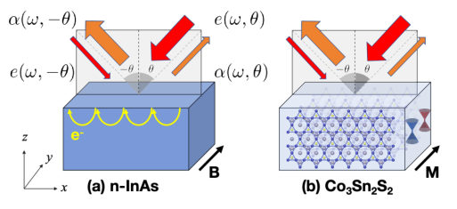
<figcaption class="paper-figure-caption"><b>Fig 1.</b> FIG. 1. Intrinsic nonreciprocal thermal photonics in a mag- netic topological material. (a) Conventional platform: An n-type InAs slab requires an external magnetic field B to break time-reversal symmetry. Heuristically, the Hall-effect- induced boundary flow (yellow arrows) breaks the balance be- tween directional absorptivity α(ω, θ) and emissivity e(ω, θ). The resulting nonreciprocity, α(ω, θ) ̸= e(ω, θ), is visualized by the varied arrow size. (b) Current work: A magnetic Weyl semimetal, spontaneously breaks time-reversal symmetry via its intrinsic magnetization M arising from the topological Weyl fermion band structure. The anomalous Hall conduc- tivity directly generates an...</figcaption>
</figure>
<figure class="paper-figure-card">
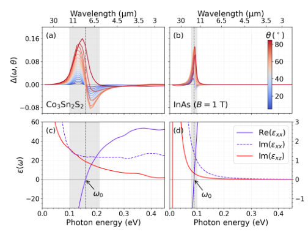
<figcaption class="paper-figure-caption"><b>Fig 2.</b> FIG. 2. Intrinsic nonreciprocity of magnetic Weyl semimetal Co3Sn2S2 versus the conventional InAs semiconductor setup. (a) Angle- and frequency-resolved nonreciprocity ∆(ω, θ) = e(ω, θ)−α(ω, θ) for Co3Sn2S2. Colors encode incidence angle; the x-axis is the photon energy (or the equivalent wavelength of photons). (b) Same for n-doped InAs under B = 1 T, com- puted with the identical Berreman solver using experimental parameters [31, 32]. (c,d) Corresponding dielectric functions for each material: solid blue lines show Re εxx(ω), dashed blue lines show Im εxx(ω) (optical loss), and red lines show the imaginary part of the off-diagonal (anomalous-Hall) com- ponent Im εxz(ω). Dashed vertical...</figcaption>
</figure>
<figure class="paper-figure-card">
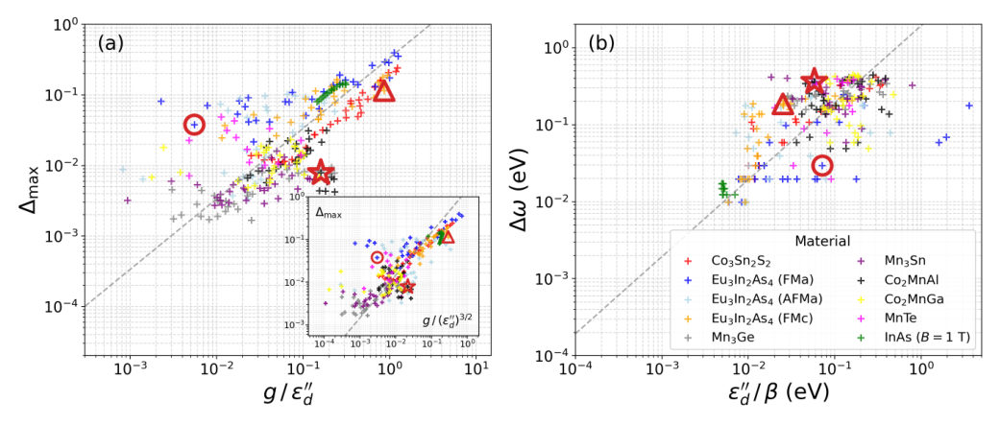
<figcaption class="paper-figure-caption"><b>Fig 3.</b> FIG. 3. Universal scaling laws for intrinsic nonreciprocal thermal radiation, verified across all candidate magnetic topological materials and benchmarked against InAs under an external magnetic field (B = 1 T). (a) Nonreciprocity strength scaling [Eq. (8)]: peak nonreciprocal contrast ∆max vs. the anomalous Hall figure of merit x = g/ε′′ d = Im εi̸=j/Im εii evaluated at the plasma/ENZ frequency ω0, corresponding to the low-loss semiconductor limit (p →1) of the general scaling ∆max ∝g/(ε′′ d)p</figcaption>
</figure>
<figure class="paper-figure-card">
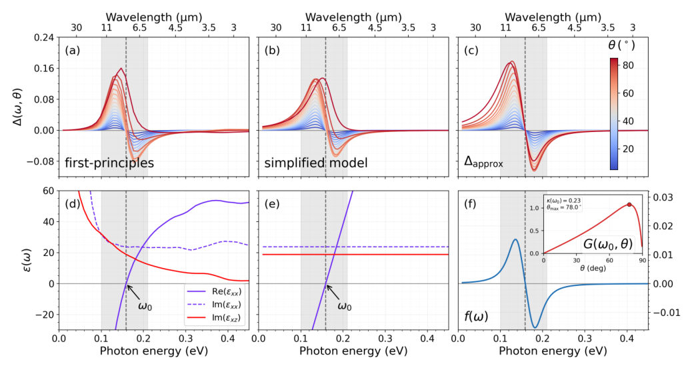
<figcaption class="paper-figure-caption"><b>Fig 4.</b> FIG. 4. Numerical validation of the factorization ∆approx(ω, θ) = 8 f(ω) G(κ, θ) [Eq. (D8)] on Co3Sn2S2 at µ = −0.17 eV, η = 0.01 eV, with purely imaginary off-diagonal gyrotropy (Re εxz = 0). Top row: ∆(ω, θ) = R(+θ) −R(−θ) computed from (a) the Berreman 4 × 4 transfer-matrix solver on the first-principles dielectric tensor of panel (d); (b) the same solver on the linearized 3-parameter ENZ model of panel (e), with Re εd(ω) = β(ω−ω0) and Im εd, εxz frozen at ω0; (c) the analytical ∆approx formula Eq. (D8) fed by the same simplified ε as panel (b). Bottom row: (d) first-principles ε of Co3Sn2S2; (e) simplified- model ε used as input to panels (b) and (c); (f) the material shape factor f(ω)...</figcaption>
</figure>
<figure class="paper-figure-card">
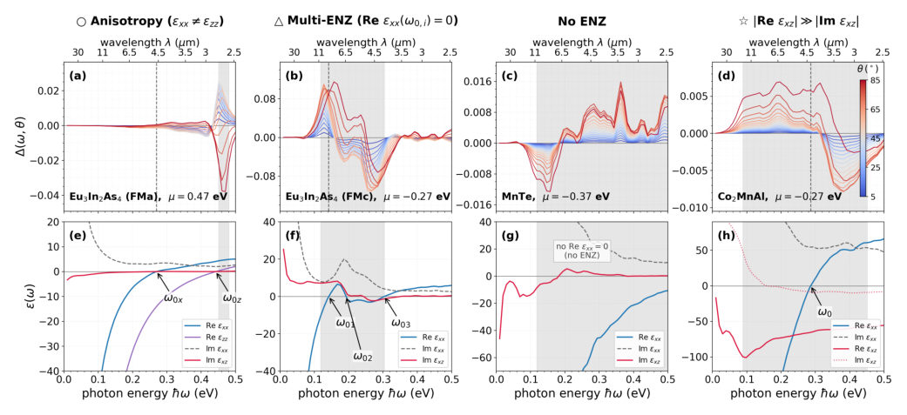
<figcaption class="paper-figure-caption"><b>Fig 5.</b> FIG. 5. Representative outliers of the scaling collapse, one per deviation mechanism, in the same format as Fig. 2. Top row: angle-resolved nonreciprocity ∆(ω, θ) (color encodes incidence angle 5◦–85◦); bottom row: the corresponding dielectric tensor with Re εxx (blue), the optical loss Im εxx (dashed grey), and the off-diagonal gyrotropy (crimson). Short arrows mark the ENZ crossings. (a,e) Eu3In2As4 (FMa), µ = +0.47 eV — diagonal optical anisotropy: the overlaid Re εzz (purple) crosses zero at ω0z ≈0.44 eV, distinct from ω0x ≈0.27 eV, and the nonreciprocity band (0.45–0.48 eV) sits near the former. (b,f) Eu3In2As4 (FMc), µ = −0.27 eV — multiple ENZ: Re εxx crosses zero three times (ω01,...</figcaption>
</figure>
</div>

<p><strong>Summary.</strong> This work develops a predictive framework to engineer strong and broadband nonreciprocal thermal emitters using intrinsic magnetism in topological materials. By combining first-principles calculations with advanced electrodynamics solvers, the authors demonstrate that magnetic Weyl semimetals outperform traditional semiconductors for field-free energy harvesting applications. The key contribution is establishing quantitative scaling laws governing material design.</p>
<p><strong>Why it may be interesting.</strong> The rigorous derivation of quantitative design rules based on fundamental material parameters (like AHE response) for controlling thermal radiation is highly relevant to open quantum systems, particularly in designing engineered photonic or phononic structures that interact strongly with external fields or environments.</p>
<details>
<summary>Detailed structure</summary>
<p><strong>Main problem.</strong> The goal is to design materials that exhibit strong, broadband nonreciprocal thermal radiation without requiring an external magnetic field.</p>
<p><strong>Main result.</strong> Magnetic topological materials like Co3Sn2S2 were shown to achieve superior, intrinsic nonreciprocity compared to conventional semiconductors. The work established universal material design recipes based on the anomalous Hall response and optical loss.</p>
<p><strong>Method.</strong> The study combines first-principles DFT calculations with Maxwell electrodynamics solvers (Berreman/S-matrix formalism) to compute frequency-dependent permittivity tensors.</p>
<p><strong>Model / system.</strong> The physical system is magnetic topological materials, modeled using a gyrotropic dielectric tensor that incorporates magnetization-induced off-diagonal components. The analysis uses generalized $4 	imes 4$ Berreman matrix solvers for semi-infinite substrates.</p>
<p><strong>Key observables.</strong> Nonreciprocal directional emissivity–absorptivity contrast ($\Delta(\omega, 	heta)$), maximum nonreciprocity ($\Delta_{\max}$), and operational bandwidth ($\Delta\omega$).</p>
<p><strong>Important parameters / regimes.</strong> The material design is governed by the ratio of anomalous Hall response ($g$) to optical loss ($\epsilon''_{d}$) for strength, and $\epsilon''_{d}/eta$ for bandwidth.</p>
<p><strong>Assumptions / limitations.</strong> The analysis relies on linearizing the permittivity tensor near an epsilon-near-zero (ENZ) crossing frequency ($\omega_0$).</p>
<p><strong>Figures summary.</strong> Figures compare the nonreciprocity spectra of Co3Sn2S2 against InAs, demonstrating superior performance. Later figures validate derived scaling laws for $\Delta_{\max}$ and $\Delta\omega$ across various candidate materials.</p>
<p><strong>Paper structure.</strong> The paper progresses from identifying the physical need (field-free nonreciprocity) to developing a theoretical framework using DFT/Kubo calculations, deriving universal scaling laws ($\Delta_{\max} \propto g/(\epsilon''_{d})^p$), and finally validating these laws with advanced numerical solvers.</p>
</details>
<details>
<summary>Abstract</summary>
<p>Breaking reciprocity in thermal radiation opens opportunities for energy harvesting, sensing, and thermal management. Traditional nonreciprocal radiative semiconductor devices need external magnetic field. In this work, we predict a series of magnetic topological materials for magnetic-field-free nonreciprocal thermal radiation in the infrared regime, by combining first-principles calculations with Maxwell electrodynamics. We find strong and broadband nonreciprocity in magnetic Weyl semimetals (e.g., Co$_3$Sn$_2$S$_2$), outperforming the conventional semiconductor such as InAs. Furthermore, we propose universal material design recipes: strong nonreciprocity requires a large anomalous Hall response relative to the optical loss, whereas the broadband response favors large optical loss and small dielectric dispersion. Our work establishes a predictive materials-discovery framework and quantitative design rules for next-generation magnet-free nonreciprocal thermal devices.</p>
</details>
<p><sub><a href="#top">↑ back to top</a></sub></p>

<p><a id="paper-2606.16884"></a></p>
<h3 id="distinguishing-between-direct-and-parametric-driving-in-nanomechanics-using-a-vibrating-carbon-nanotube"><a href="http://arxiv.org/abs/2606.16884v1">Distinguishing between Direct and Parametric Driving in Nanomechanics Using a Vibrating Carbon Nanotube</a></h3>
<p><strong>Authors:</strong> Sam Dicker, Patrick Steger, Deepanjan Das, Saba M. Khan, Edward A. Laird<br>
<strong>Type:</strong> both · <strong>Category:</strong> other · <strong>PDF:</strong> <a href="https://arxiv.org/pdf/2606.16884v1">https://arxiv.org/pdf/2606.16884v1</a><br>
<strong>Analysis basis:</strong> full PDF text, analyzed in chunks
<strong>Topic relevance:</strong> <code>driven-dissipative phase transition</code> <strong>3/5</strong> · <code>methods for driven-dissipative</code> <strong>3/5</strong> · <code>non-equilibrium dynamics</code> <strong>2/5</strong> · <code>non-equilibrium universality</code> <strong>2/5</strong> · <code>Keldysh / 2PI / non-Gaussian methods</code> <strong>1/5</strong> · <code>quantum measurements</code> <strong>1/5</strong> · <code>quantum optics experiment</code> <strong>1/5</strong></p>
<div class="figure-strip-hint">↔ Scroll figures horizontally</div>
<div class="paper-figures-scroll">
<figure class="paper-figure-card">
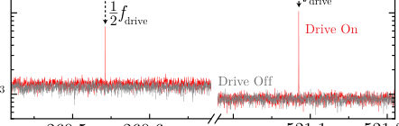
<figcaption class="paper-figure-caption"><b>Fig 1.</b> FIG. 2. Output power as a function of frequency when the device is driven at fdrive = 521.09 MHz at a gate voltage −8514 mV. The peak at fsb = fdrive/2 shows that the lower branch of the zeroth mode pair (f − 0 ≈260.54 MHz) is being excited by a drive at 2f − 0 , indicating a parametric mechanism. A peak also appears at fdrive, which results from a combina- tion of pure electrical mixing (i.e., not caused by mechanical motion), leakage signals into the TWPA, and the nonlinear electrical response to motion at fdrive/2. As expected, no peaks are seen when the drive is off.</figcaption>
</figure>
<figure class="paper-figure-card">
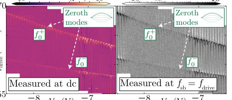
<figcaption class="paper-figure-caption"><b>Fig 2.</b> FIG. 1. (a) Device schematic. The transverse flexural modes of the suspended nanotube are tuned using the dc part of the voltage on gate G, and excited by the ac part. To probe the motion, a dc + ac voltage is applied between source S and drain D, inducing a current I(t) through the device, which contains components that arise from electromechanical mix- ing. (b) Transverse displacement directions for a mode pair. (c) Simplified measurement circuit (dc path not shown; see Sec. C for full version). The nominal attenuation on the drive and probe paths is indicated. Sidebands in the output, ap- pearing at frequency fsb, arise when the nanotube moves at that frequency. (d) The zeroth...</figcaption>
</figure>
<figure class="paper-figure-card">

<figcaption class="paper-figure-caption"><b>Fig 3.</b> Figure 2 demonstrates parametric resonance detected using the ac measurement. The drive was applied at fdrive = 521.09 MHz, approximately twice the mechanical frequency f − 0 . This induced sidebands at both fprobe ± fdrive and fprobe ± 1</figcaption>
</figure>
<figure class="paper-figure-card">
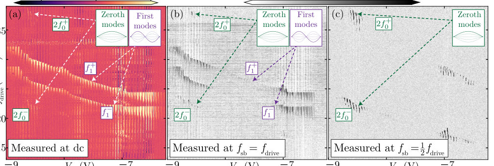
<figcaption class="paper-figure-caption"><b>Fig 4.</b> FIG. 3. Measurements around the first mode pair f ± 1 (i.e. the first overtone) using dc current (a) and ac detection (b, c). Panel (b), measured simultaneously with (a), shows the ac component at the drive frequency; panel (c) shows the component at half the drive frequency. Both the f ± 0 modes and the f ± 1 modes are visible in this figure, with the f ± 1 pair being directly driven (and therefore moving at fdrive) and the f ± 0 pair being parametrically driven at 2f ± 0 (and therefore moving at fdrive/2). Consistent with this picture, the directly driven modes appear strongly both at dc (a) and at the drive frequency (b); however, the directly driven modes do not appear in (c), because...</figcaption>
</figure>
<figure class="paper-figure-card">
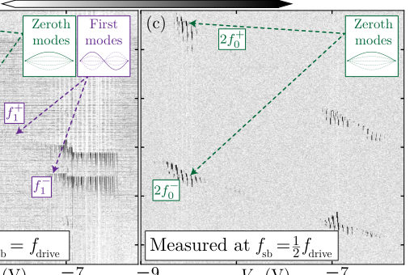
<figcaption class="paper-figure-caption"><b>Fig 5.</b> Figure 4 compares the ac response of the f − 0 mode un- der direct driving (panels (a, b)) and parametric driving (panels (c, d)). Panel (a) shows the output power when this mode was driven close to its mode frequency (i.e. with fdrive ≈f − 0 ) and measured at fsb = fdrive. As ex- pected, the response became stronger as the drive power was increased. Panel (b) plots the strength of the on- resonance response, extracted by taking the maximum of each column in (a), as a function of Pdrive. Fitting this to Eq. (1) confirms that over a wide range of drive power, the output is proportional to the drive. Panel (c) is the corresponding measurement when the same mode was driven near twice its mode...</figcaption>
</figure>
</div>

<p><strong>Summary.</strong> The paper details an advanced microwave measurement technique using a vibrating carbon nanotube resonator to resolve the ambiguity between direct and parametric driving forces. By detecting sidebands at half the drive frequency ($ ext{f}<em ext_drive="ext{drive">{    ext{drive}}/2$), the authors confirm parametric excitation, while signals at $  ext{f}</em>$ confirm direct motion. This methodology is crucial for characterizing nonlinearities in nanoscale mechanical oscillators.}</p>
<p><strong>Why it may be interesting.</strong> This work provides a sophisticated experimental technique for probing nonlinear dynamics in nanoscale mechanical systems by leveraging frequency mixing, which is highly relevant to understanding energy transfer and non-equilibrium physics in quantum devices.</p>
<details>
<summary>Detailed structure</summary>
<p><strong>Main problem.</strong> The primary challenge is unambiguously distinguishing between direct mechanical excitation and parametric driving mechanisms in nanomechanical resonators, as standard electrical readout methods are insufficient.</p>
<p><strong>Main result.</strong> By operating the device as an electromechanical mixer and measuring microwave sidebands, the authors successfully separated the signatures of direct motion from those of parametric resonance, even when drive frequencies were close.</p>
<p><strong>Method.</strong> The technique involves using low-noise superconducting amplifiers to detect microwave sidebands ($  ext{f}<em ext_drive="ext{drive">{    ext{sb}}$) at $ ext{f}</em>/2$ (parametric signature) versus measuring signals directly at the drive frequency or DC (direct signature).}</p>
<p><strong>Model / system.</strong> The system is a vibrating carbon nanotube resonator integrated into a single-electron transistor (SET) structure. The analysis combines experimental measurements with theoretical models describing nonlinear stiffness terms and parametric resonance conditions.</p>
<p><strong>Key observables.</strong> Sideband frequencies ($    ext{f}<em ext_out="ext{out">{    ext{sb}}$), output power ($P</em>}}$) dependence on drive power, and the ratio of measured sidebands to the drive frequency (e.g., $  ext{f<em ext_drive="ext{drive">{    ext{drive}}/2$ vs. $    ext{f}</em>$).}</p>
<p><strong>Important parameters / regimes.</strong> Drive frequencies ($    ext{f}<em ext_probe="ext{probe">{    ext{drive}}$), probe frequency ($ ext{f}</em>$), and the order of nonlinearity ($\ell$) governing parametric coupling.}</p>
<p><strong>Assumptions / limitations.</strong> The method assumes that direct driving yields signals at $   ext{f}_{    ext{drive}}$, while parametric driving generates distinct sidebands, allowing for spectral separation. Theoretical models rely on Taylor expansion of conductance and perturbation theory for resonance conditions.</p>
<p><strong>Figures summary.</strong> Figures compare DC current measurements with AC detection at different sideband frequencies ($ ext{f}<em ext_drive="ext{drive">{    ext{drive}}$ vs $   ext{f}</em>/2$) to differentiate excitation types, and show power dependence fitting to theoretical models for both mechanisms.}</p>
<p><strong>Paper structure.</strong> The paper establishes the ambiguity of standard readout, introduces the mixer/sideband detection technique, demonstrates its success in separating direct ($   ext{f} \pm 1$ or $  ext{f}<em ext_drive="ext{drive">{    ext{drive}}$) from parametric ($ ext{f} \pm 0$ or $  ext{f}</em>/2$) responses for different modes, and finally extends the analysis to high-order nonlinearities.}</p>
</details>
<details>
<summary>Abstract</summary>
<p>Parametric driving is a powerful route to amplification and nonlinear control in nanomechanical resonators, but its signatures can be ambiguous because standard dc electrical readout does not directly reveal the frequency of motion. Here we resolve this ambiguity by measuring the motional frequency of a vibrating carbon nanotube independently of the drive frequency. We operate the nanotube as an electromechanical mixer and detect microwave sidebands using a low-noise superconducting amplifier. This frequency-resolved readout distinguishes direct motion of the first overtone from parametric motion of the fundamental, even when the corresponding drive frequencies nearly coincide. The two mechanisms are further separated by their drive-power dependence. Beyond conventional parametric resonance at $2f_0$, we observe responses to driving at $3f_0$ and $4f_0$, consistent with high-order parametric excitation associated with nonlinear stiffness terms.</p>
</details>
<p><sub><a href="#top">↑ back to top</a></sub></p>

<p><a id="paper-2606.15312"></a></p>
<h3 id="intrinsic-decay-length-in-elastic-localization"><a href="http://arxiv.org/abs/2606.15312v1">Intrinsic decay length in elastic localization</a></h3>
<p><strong>Authors:</strong> Xiang Yu<br>
<strong>Type:</strong> theory · <strong>Category:</strong> disordered systems and neural networks · <strong>PDF:</strong> <a href="https://arxiv.org/pdf/2606.15312v1">https://arxiv.org/pdf/2606.15312v1</a><br>
<strong>Analysis basis:</strong> full PDF text, analyzed in chunks
<strong>Topic relevance:</strong> <code>Frenkel-Kontorova</code> <strong>3/5</strong> · <code>non-equilibrium dynamics</code> <strong>2/5</strong> · <code>non-equilibrium universality</code> <strong>2/5</strong> · <code>Keldysh / 2PI / non-Gaussian methods</code> <strong>1/5</strong> · <code>analog quantum simulation</code> <strong>1/5</strong> · <code>correlated / nonlocal dissipation</code> <strong>1/5</strong> · <code>driven-dissipative phase transition</code> <strong>1/5</strong> · <code>methods for driven-dissipative</code> <strong>1/5</strong></p>
<div class="figure-strip-hint">↔ Scroll figures horizontally</div>
<div class="paper-figures-scroll">
<figure class="paper-figure-card">
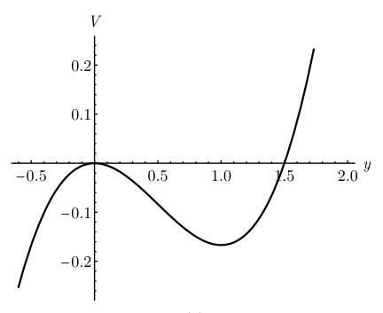
<figcaption class="paper-figure-caption"><b>Fig 1.</b> Figure 1: (a) The potential V pyq “ ´ 1</figcaption>
</figure>
<figure class="paper-figure-card">
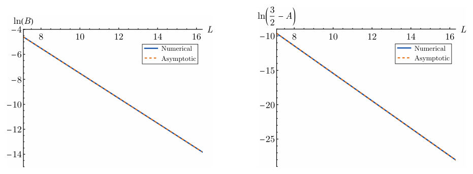
<figcaption class="paper-figure-caption"><b>Fig 2.</b> Figure 2: Comparison between numerical results and two-term asymptotic predictions for (a) ln B and (b) ln ` 3</figcaption>
</figure>
<figure class="paper-figure-card">
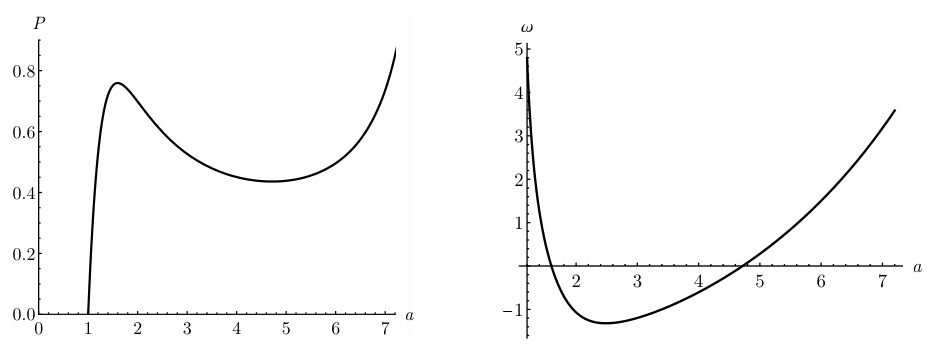
<figcaption class="paper-figure-caption"><b>Fig 3.</b> Figure 3: (a) Pressurestretch relation for the homogeneous deformation with fixed N “ 0. (b) Variation of the linear stability coefficient ω with respect to the inflation stretch.</figcaption>
</figure>
<figure class="paper-figure-card">
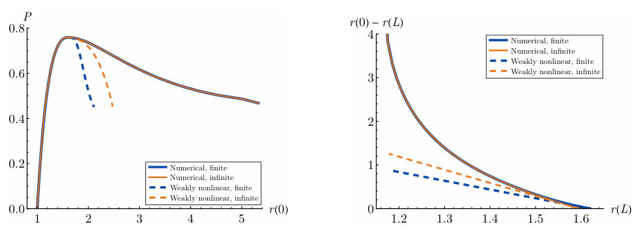
<figcaption class="paper-figure-caption"><b>Fig 4.</b> Figure 4: (a) Relation between the pressure and the maximum inflation radius. (b) Evolution of the bulging amplitude with the end radius.</figcaption>
</figure>
<figure class="paper-figure-card">

<figcaption class="paper-figure-caption"><b>Fig 5.</b> Fig. 4 shows the pressure–radius relation and the evolution of the bulging amplitude, while Fig. 5 compares the fully nonlinear finite- and infinite-domain solutions together with their weakly nonlinear approximations near the bifurcation point. Initially, the tube deforms homogeneously as the pressure increases. At the pressure maximum, the homogeneous state loses stability and a localized bulging mode emerges. The subsequent post-bifurcation evolution is accompanied by a decrease in pressure as the bulge amplitude grows. A first key observation from Fig. 4 is that the finite- and infinite-domain solution branches become nearly indistinguishable shortly after bifurcation. This indicates a rapid...</figcaption>
</figure>
</div>

<p><strong>Summary.</strong> This work establishes a rigorous criterion, the intrinsic decay length, to quantify when localized solutions in finite elastic structures approach their infinite-domain limits. By analyzing prototypical models from mechanics, it provides a unified framework explaining the convergence rate and the differing validity regimes of weakly nonlinear approximations in both finite and infinite settings.</p>
<p><strong>Why it may be interesting.</strong> While focused on classical elasticity, the mathematical machinery—comparing solutions based on different topological structures (periodic vs. homoclinic) and identifying a characteristic length scale ($\ell_{dec}$) that dictates the breakdown of approximations—is highly relevant to understanding crossover regimes in quantum systems or disordered media.</p>
<details>
<summary>Detailed structure</summary>
<p><strong>Main problem.</strong> The core problem is determining when localized solutions in finite elastic structures can be accurately approximated by their simpler infinite-domain counterparts.</p>
<p><strong>Main result.</strong> Convergence occurs exponentially once the structural length exceeds a characteristic intrinsic decay length, which governs the validity of both approximations and weakly nonlinear theories.</p>
<p><strong>Method.</strong> Theoretical analysis using phase-plane methods, asymptotic matching (inner/outer regions), and quantitative error estimation via Grönwall-type inequalities.</p>
<p><strong>Model / system.</strong> The study uses prototypical localization models derived from continuum mechanics, applied to physical systems like bulging in membrane tubes or helical buckling in twisted rods. The analysis compares solutions governed by periodic orbits (finite domain) to those governed by homoclinic orbits (infinite domain).</p>
<p><strong>Key observables.</strong> Intrinsic decay length ($\ell_{dec}$), amplitude measures of localized deformation, and the difference between finite-domain and infinite-domain solution profiles.</p>
<p><strong>Important parameters / regimes.</strong> Structural length ($L$), loading parameter ($\gamma$), and the intrinsic decay length ($\ell_{dec}$).</p>
<p><strong>Assumptions / limitations.</strong> The analysis assumes that the system can be modeled by a prototypical nonlinear ODE, allowing for comparison between periodic (finite) and homoclinic (infinite) solutions.</p>
<p><strong>Figures summary.</strong> Figures compare amplitude measures and centerline positions of localized states across varying loading parameters ($\gamma$), showing rapid convergence towards the infinite-domain solution as $\gamma$ decreases or $L$ increases relative to $\ell_{dec}$.</p>
<p><strong>Paper structure.</strong> The paper develops a unified geometric framework by comparing finite-domain boundary value problems (periodic orbits) with their infinite-domain limits (homoclinic orbits). It applies this framework sequentially to membrane bulging and helical buckling, culminating in the definition of the intrinsic decay length.</p>
</details>
<details>
<summary>Abstract</summary>
<p>Localization in finite elastic structures is often studied using infinite-domain solutions, which avoid the explicit treatment of boundaries and admit simpler analytical descriptions. Yet it remains poorly understood when finite-domain localized states can be accurately approximated by their infinite-domain counterparts. In this work, we show that the accuracy is controlled by an intrinsic decay length. Using a prototypical localization model, we show that finite-domain localized solutions converge exponentially to the corresponding infinite-domain localized solution once the structural length exceeds the intrinsic decay length. The intrinsic decay length also explains the markedly different validity regimes of finite- and infinite-domain weakly nonlinear approximations. It further has important implications for numerical computation, since once the structural length exceeds the intrinsic decay length, localized solutions corresponding to different domain lengths differ only by exponentially small quantities, making them increasingly difficult to distinguish numerically. The theoretical predictions are validated using two representative localization problems: bulging in membrane tubes and localized helical buckling in twisted rods. The present work provides a unified geometric framework for understanding localization transition, asymptotic validity, and numerical computation in elastic localization.</p>
</details>
<p><sub><a href="#top">↑ back to top</a></sub></p>

<p><a id="paper-2606.15371"></a></p>
<h3 id="topological-surface-charge-detection-via-terahertz-time-domain-spectroscopy"><a href="http://arxiv.org/abs/2606.15371v1">Topological Surface Charge Detection via Terahertz Time-domain Spectroscopy</a></h3>
<p><strong>Authors:</strong> Tong Shen, Yiyang Xie, Yucheng Dai, Yifan Zhang, Yuanze Li, Xufeng Kou, Tian Liang<br>
<strong>Type:</strong> experiment · <strong>Category:</strong> other · <strong>PDF:</strong> <a href="https://arxiv.org/pdf/2606.15371v1">https://arxiv.org/pdf/2606.15371v1</a><br>
<strong>Analysis basis:</strong> full PDF text, analyzed in chunks
<strong>Topic relevance:</strong> <code>exotic spin models in light-matter</code> <strong>3/5</strong> · <code>spintronics-quantum-optics interface</code> <strong>3/5</strong> · <code>quantum optics experiment</code> <strong>2/5</strong> · <code>Keldysh / 2PI / non-Gaussian methods</code> <strong>1/5</strong> · <code>analog quantum simulation</code> <strong>1/5</strong> · <code>driven-dissipative phase transition</code> <strong>1/5</strong> · <code>interference shaping light</code> <strong>1/5</strong></p>
<div class="figure-strip-hint">↔ Scroll figures horizontally</div>
<div class="paper-figures-scroll">
<figure class="paper-figure-card">
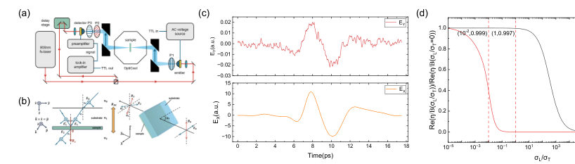
<figcaption class="paper-figure-caption"><b>Fig 1.</b> Fig. 1 THz time-domain spectroscopy and charge accumulation. (a) Experimental setup for</figcaption>
</figure>
<figure class="paper-figure-card">
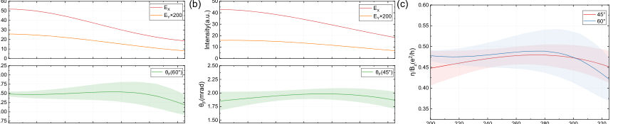
<figcaption class="paper-figure-caption"><b>Fig 2.</b> Fig. 2 Angular dependence of Faraday rotation and charge accumulation. Intensity spectra</figcaption>
</figure>
<figure class="paper-figure-card">
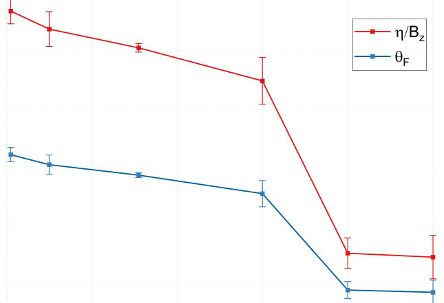
<figcaption class="paper-figure-caption"><b>Fig 3.</b> Fig. 3 Temperature dependence of Faraday rotation and charge accumulation. (a) Faraday</figcaption>
</figure>
<figure class="paper-figure-card">
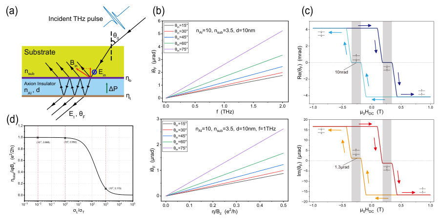
<figcaption class="paper-figure-caption"><b>Fig 4.</b> Fig. 4 Optical detection of the topological magnetoelectric effect. (a) Schematic of probing</figcaption>
</figure>
</div>

<p><strong>Summary.</strong> This paper reports on an experimental method utilizing Terahertz Time-domain Spectroscopy to optically detect the topological surface charge accumulation predicted by the Topological Magnetoelectric Effect in topological insulator thin films. By measuring Faraday rotation at oblique incidence, the authors demonstrate a technique robust against material conductivity limitations, providing a direct pathway toward verifying fundamental quantum electrodynamic effects.</p>
<p><strong>Why it may be interesting.</strong> While not directly related to standard AMO topics like cold atoms or cavity QED, this work involves probing fundamental quantum electrodynamics effects (magnetoelectric coupling) using advanced optical spectroscopy techniques that share conceptual links with light-matter interaction studies in open systems.</p>
<details>
<summary>Detailed structure</summary>
<p><strong>Main problem.</strong> The primary goal is to develop an optical method using THz-TDS to directly detect the quantized surface charge accumulation ($\eta/B_z$) associated with the Topological Magnetoelectric Effect (TME) in 3D topological insulators.</p>
<p><strong>Main result.</strong> The technique successfully measures Faraday rotation at oblique incidence, demonstrating robustness against finite longitudinal conductivity and showing consistent results across different incident angles ($45^\circ$ vs $60^\circ$).</p>
<p><strong>Method.</strong> Terahertz Time-domain Spectroscopy (THz-TDS) is employed to measure the Faraday rotation angle ($   heta_F$) in thin films under oblique incidence, allowing for the extraction of surface charge density.</p>
<p><strong>Model / system.</strong> The study uses chromium-doped $(	ext{Bi},	ext{Sb})_2	ext{Te}_3$ thin films exhibiting topological properties. The physics is governed by the TME, which predicts a quantized surface charge accumulation proportional to an applied magnetic field component ($B_z$).</p>
<p><strong>Key observables.</strong> Faraday rotation angle ($  heta_F$), extracted surface charge density ($\eta/B_z$), and the frequency-linear imaginary part of the Faraday rotation for axion insulators.</p>
<p><strong>Important parameters / regimes.</strong> Oblique incidence angles ($45^\circ, 60^\circ$); low temperatures (e.g., $2	ext{ K}$); comparison between optical vs. transport measurements ($\sigma_L/\sigma_T$).</p>
<p><strong>Assumptions / limitations.</strong> The derivation relies on modeling the transmitted electric field using transmission and propagation matrices; for axion insulators, approximations like $\phi \ll 1$ are used.</p>
<p><strong>Figures summary.</strong> Figures illustrate the THz-TDS setup geometry (oblique incidence), time-domain waveforms showing $E_X$ and $E_Y$, angular dependence of Faraday rotation, and comparisons demonstrating the optical method's robustness against longitudinal conductivity ($\sigma_L$).</p>
<p><strong>Paper structure.</strong> The paper introduces the TME in TIs, details the THz-TDS experimental setup for measuring oblique incidence effects, derives the relationship between $    heta_F$ and $\eta/B_z$, presents measurements confirming consistency across angles, and discusses extensions to axion insulators.</p>
</details>
<details>
<summary>Abstract</summary>
<p>The topological magnetoelectric effect (TME) in three-dimensional topological insulators manifests as a quantized surface charge accumulation proportional to an applied magnetic field. Here we demonstrate an optical method using terahertz time-domain spectroscopy (THz-TDS) to detect surface charge accumulation in a chromium-doped (Bi,Sb)$_2$Te$_3$ thin film under oblique incidence, achieving sub-milliradian Faraday rotation precision. Unlike transport probes that require ultralow longitudinal conductivity, this optical technique is robust against finite $σ_L$, degrading by less than $0.3\%$ even when $σ_L \sim σ_T$. We extract the charge accumulation $η/B_z$ from the measured Faraday rotation and show results at $45^\circ$ and $60^\circ$ coincide within experimental uncertainty. Extending this to axion insulators, we predict that the TME produces an imaginary Faraday rotation linear in frequency, whose slope directly reflects the single-surface charge density. With improved sample thickness and precision, this optical scheme provides a viable pathway toward direct verification of the TME and four-dimensional quantum Hall effect.</p>
</details>
<p><sub><a href="#top">↑ back to top</a></sub></p>

<p><a id="paper-2606.15128"></a></p>
<h3 id="oxidation-induced-ultrafast-spin-to-orbital-conversion-at-heavy-metal-interfaces"><a href="http://arxiv.org/abs/2606.15128v1">Oxidation-induced ultrafast spin-to-orbital conversion at heavy-metal interfaces</a></h3>
<p><strong>Authors:</strong> Xiaoxue Zeng, Tianyi Zhang, Yaokai Niu, Qiye Wen, Zhiyong Zhong, Zhi-Min Liao, Peng Yan, Xiufeng Han, Lichuan Jin<br>
<strong>Type:</strong> experiment · <strong>Category:</strong> other · <strong>PDF:</strong> <a href="https://arxiv.org/pdf/2606.15128v1">https://arxiv.org/pdf/2606.15128v1</a><br>
<strong>Analysis basis:</strong> full PDF text, analyzed in chunks
<strong>Topic relevance:</strong> <code>spintronics-quantum-optics interface</code> <strong>3/5</strong> · <code>driven-dissipative phase transition</code> <strong>2/5</strong> · <code>non-equilibrium dynamics</code> <strong>2/5</strong> · <code>Kondo &amp; dissipative impurity</code> <strong>1/5</strong> · <code>correlated / nonlocal dissipation</code> <strong>1/5</strong> · <code>exotic spin models in light-matter</code> <strong>1/5</strong> · <code>non-equilibrium universality</code> <strong>1/5</strong></p>
<div class="figure-strip-hint">↔ Scroll figures horizontally</div>
<div class="paper-figures-scroll">
<figure class="paper-figure-card">
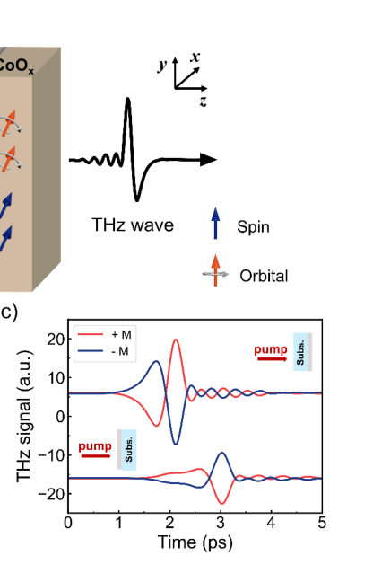
<figcaption class="paper-figure-caption"><b>Fig 1.</b> FIG. 1. (a) Schematic illustration of the THz emission from W/Co/SiO2 heterostructure.</figcaption>
</figure>
<figure class="paper-figure-card">
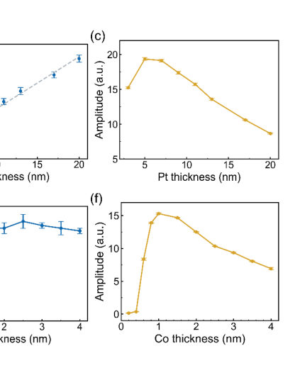
<figcaption class="paper-figure-caption"><b>Fig 2.</b> FIG. 2. (a) THz emission signal from W(tW)/Co(1)/SiO2 heterostructures with varying</figcaption>
</figure>
<figure class="paper-figure-card">
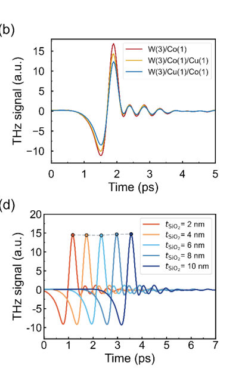
<figcaption class="paper-figure-caption"><b>Fig 3.</b> FIG. 3. (a) THz emission signal from NM/Co/SiO2 heterostructure, where NM=W, Pt,</figcaption>
</figure>
<figure class="paper-figure-card">
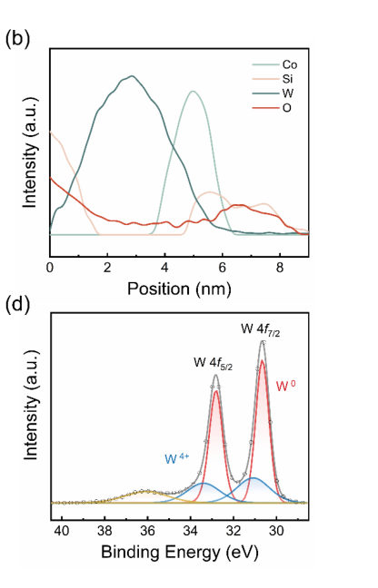
<figcaption class="paper-figure-caption"><b>Fig 4.</b> FIG. 4. (a) Cross-sectional HAADF-STEM image of the W(5)/Co(1)/SiO2</figcaption>
</figure>
</div>

<p><strong>Summary.</strong> This work demonstrates that interfacial oxidation provides a powerful handle to engineer efficient conversion from spin angular momentum to orbital angular momentum in heavy-metal heterostructures. By measuring ultrafast THz emission, the authors prove this effect is maximized at oxidized interfaces, opening a general route for designing high-performance orbitronic terahertz emitters.</p>
<p><strong>Why it may be interesting.</strong> While not directly related to quantum information protocols, the study involves ultrafast dynamics, spin-orbit coupling effects, and engineered electronic states, which are foundational concepts in condensed matter physics relevant to advanced quantum devices.</p>
<details>
<summary>Detailed structure</summary>
<p><strong>Main problem.</strong> The study aims to understand how interfacial oxidation can be engineered to control and enhance spin-to-orbital conversion in heavy-metal/ferromagnetic heterostructures for applications in orbitronic terahertz emitters.</p>
<p><strong>Main result.</strong> Interfacial oxidation at the W/Co interface drives a highly efficient spin-to-orbital conversion, evidenced by THz emission amplitudes significantly larger than conventional bilayers. This mechanism is shown to be generic across different heavy metals and scales with their spin-orbit coupling strength.</p>
<p><strong>Method.</strong> The research employs time-resolved Terahertz (THz) emission spectroscopy on engineered thin-film heterostructures, complemented by structural characterization using STEM/EELS and XPS.</p>
<p><strong>Model / system.</strong> The physical system consists of multilayered metal/oxide heterostructures, primarily W/Co/SiO2. The mechanism relies on the electronic structure modification (orbital texture) induced by oxygen incorporation at the interfaces between heavy metals and ferromagnets.</p>
<p><strong>Key observables.</strong> THz emission amplitude enhancement ($\sim 3	imes$ over Co/Pt), linear time delay scaling with W thickness, and chemical states confirmed via XPS.</p>
<p><strong>Important parameters / regimes.</strong> Heavy metal type (e.g., Pt, Ta vs Ti, Cu), layer thicknesses ($t_W$, $t_{Co}$), and the degree of interfacial oxidation.</p>
<p><strong>Assumptions / limitations.</strong> The observed THz enhancement is directly attributable to orbital-current transport originating from the oxidized interface, which acts as a trigger for spin-to-orbital conversion.</p>
<p><strong>Figures summary.</strong> Figures compare THz signals across various heterostructures and show the linear dependence of the time delay on W thickness. Structural characterization confirms interfacial intermixing and oxidation states in the critical W/Co/SiO2 structure.</p>
<p><strong>Paper structure.</strong> The paper establishes the problem by noting the unexplored role of oxidation in spin-to-orbital conversion, presents THz measurements showing enhancement in W/Co/SiO2, systematically varies layer parameters to pinpoint the oxidation mechanism, and concludes with a general framework for orbitronic emitter design.</p>
</details>
<details>
<summary>Abstract</summary>
<p>Oxidation engineering provides a route to control orbital degrees of freedom, yet its role in spin-to-orbital conversion remains largely unexplored. Here, we report an efficient spin-to-orbital conversion mechanism driven by interfacial oxidation at heavy-metal interfaces. In W/Co/SiO2 heterostructures, terahertz emission exhibits a time delay that scales linearly with the W thickness, identifying orbital-current transport as the dominant origin. The emission amplitude is approximately three times larger than that of Co/Pt bilayers, indicating highly efficient conversion from spin to orbital angular momentum. Systematic variation of Co thickness, stoichiometry, and interface configuration reveals that the effect originates from oxidation of the W layer at the W/Co interface, which modulates the interfacial orbital texture. We further show that this mechanism is generic across different heavy metals and scales with their spin-orbit coupling strength. These results establish oxidation as an effective handle to engineer spin-to-orbital conversion and provide a general route toward orbitronic terahertz emitters.</p>
</details>
<p><sub><a href="#top">↑ back to top</a></sub></p>

<p><a id="paper-2606.16676"></a></p>
<h3 id="optical-vortex-probe-of-loop-current-chirality-in-moire-materials"><a href="http://arxiv.org/abs/2606.16676v1">Optical vortex probe of loop-current chirality in moiré materials</a></h3>
<p><strong>Authors:</strong> Nobuhiko Yokoshi, Akihito Kato<br>
<strong>Type:</strong> both · <strong>Category:</strong> other · <strong>PDF:</strong> <a href="https://arxiv.org/pdf/2606.16676v1">https://arxiv.org/pdf/2606.16676v1</a><br>
<strong>Analysis basis:</strong> full PDF text, analyzed in chunks
<strong>Topic relevance:</strong> <code>interference shaping light</code> <strong>3/5</strong> · <code>quantum optics experiment</code> <strong>2/5</strong> · <code>Keldysh / 2PI / non-Gaussian methods</code> <strong>1/5</strong> · <code>analog quantum simulation</code> <strong>1/5</strong> · <code>driven-dissipative phase transition</code> <strong>1/5</strong> · <code>methods for driven-dissipative</code> <strong>1/5</strong> · <code>spintronics-quantum-optics interface</code> <strong>1/5</strong></p>
<div class="figure-strip-hint">↔ Scroll figures horizontally</div>
<div class="paper-figures-scroll">
<figure class="paper-figure-card">
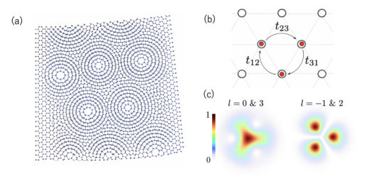
<figcaption class="paper-figure-caption"><b>Fig 1.</b> FIG. 1. (a) Schematic of TBG, where a small twist angle between two graphene layers gives rise to a moir´e superlattice. (b) Three selected moir´e-superlattice sites (filled red circles; open circles indicate neighboring sites) form an elementary triangular plaquette connected by effective interlayer-assisted hoppings t12, t23, and t31. (c) Intensity profiles of optical fields formed by superposing two optical vortices with differ- ent OAM values, exhibiting C3 symmetry.</figcaption>
</figure>
</div>

<p><strong>Summary.</strong> The paper introduces an optical technique using structured light beams to measure the intrinsic loop-current chirality within moiré materials like twisted bilayer graphene. By exploiting the threefold ($C_3$) rotational symmetry, they demonstrate that this chiral signature is uniquely isolated in the $\Delta\ell=3$ channel of a measured photocurrent. This provides a powerful, symmetry-resolved diagnostic tool for characterizing geometric properties in quantum electronic systems.</p>
<p><strong>Why it may be interesting.</strong> This work bridges concepts from topological physics (Berry curvature, chirality) with advanced quantum optics techniques (OAM filtering), providing a concrete, measurable protocol to detect subtle geometric properties in solid-state systems that might otherwise be masked by disorder or symmetry breaking.</p>
<details>
<summary>Detailed structure</summary>
<p><strong>Main problem.</strong> The authors propose a method to optically probe the intrinsic loop-current chirality present in moiré materials, such as twisted bilayer graphene.</p>
<p><strong>Main result.</strong> They show that preserving $C_3$ symmetry allows the intrinsic chiral contribution to be isolated specifically in the $\Delta\ell=3$ channel of the helicity-dependent dc photocurrent. This establishes angular-momentum-resolved nonlinear optics as a powerful diagnostic tool for geometric chirality.</p>
<p><strong>Method.</strong> The method uses interfering optical vortex beams carrying Orbital Angular Momentum (OAM) ($\ell$) to act as an angular-momentum filter, projecting the nonlinear response onto specific harmonic channels ($\Delta\ell$).</p>
<p><strong>Model / system.</strong> The primary system is moiré materials, exemplified by twisted bilayer graphene (TBG), which hosts electronic circulation and geometric phases on triangular plaquettes. The theoretical framework involves analyzing the nonlinear optical response kernel $K_{\omega}(\mathbf{k})$ based on the Bistritzer–MacDonald Hamiltonian.</p>
<p><strong>Key observables.</strong> Helicity-dependent dc photocurrent, decomposed into OAM-resolved spectral weights $A(\Delta\ell)(\omega)$, and the loop phase accumulation $\Phi_	riangle$.</p>
<p><strong>Important parameters / regimes.</strong> The selection rule depends critically on the preservation of $C_3$ symmetry; strain or perturbations break this symmetry, activating different channels like $\Delta\ell=2$.</p>
<p><strong>Assumptions / limitations.</strong> The analysis assumes that local $C_3$ symmetry dictates the selection rules for the OAM channels, even when considering finite beam waists or rotational disorder.</p>
<p><strong>Figures summary.</strong> Figures illustrate the schematic of TBG moiré superlattices, the elementary triangular plaquettes forming closed loops, and intensity profiles demonstrating how optical vortices interact with $C_3$ symmetry.</p>
<p><strong>Paper structure.</strong> The paper develops a theoretical framework linking intrinsic geometric chirality (related to loop currents) to specific angular harmonics ($\Delta\ell=3$) in the nonlinear optical response. It contrasts this intrinsic signal against contributions from symmetry-breaking perturbations ($\Delta\ell=2$), proposing diagnostic ratios for experimental verification.</p>
</details>
<details>
<summary>Abstract</summary>
<p>We propose a symmetry-resolved optical probe of intrinsic loop-current chirality in moiré materials, with twisted bilayer graphene as a representative realization. Interlayer interference generates chiral electronic circulation on triangular plaquettes, giving rise to an intrinsic geometric chirality that enters the second-order response through a $C_3$-selected angular harmonic of the Berry curvature and can be isolated by the orbital-angular-momentum difference $Δ\ell$ of interfering optical vortex beams. When moiré $C_3$ symmetry is preserved, the intrinsic contribution appears in the $Δ\ell=3$ channel of the helicity-dependent dc photocurrent, whereas $C_3$-breaking perturbations activate additional channels. These results establish angular-momentum-resolved nonlinear optics as a route to probing geometric chirality in moiré and other symmetry-engineered quantum materials.</p>
</details>
<p><sub><a href="#top">↑ back to top</a></sub></p>

<p><a id="paper-2606.14878"></a></p>
<h3 id="valley-valves-at-domain-walls-in-symmetry-broken-rhombohedral-graphene"><a href="http://arxiv.org/abs/2606.14878v1">Valley Valves at Domain Walls in Symmetry-Broken Rhombohedral Graphene</a></h3>
<p><strong>Authors:</strong> Vo Tien Phong, Elsa Prada, Pablo San-Jose, Francisco Guinea, Eugene J Mele<br>
<strong>Type:</strong> theory · <strong>Category:</strong> strongly correlated electrons · <strong>PDF:</strong> <a href="https://arxiv.org/pdf/2606.14878v1">https://arxiv.org/pdf/2606.14878v1</a><br>
<strong>Analysis basis:</strong> full PDF text, analyzed in chunks
<strong>Topic relevance:</strong> <code>Keldysh / 2PI / non-Gaussian methods</code> <strong>3/5</strong> · <code>spintronics-quantum-optics interface</code> <strong>2/5</strong> · <code>Kondo &amp; dissipative impurity</code> <strong>1/5</strong> · <code>analog quantum simulation</code> <strong>1/5</strong> · <code>driven-dissipative phase transition</code> <strong>1/5</strong> · <code>methods for driven-dissipative</code> <strong>1/5</strong> · <code>non-equilibrium dynamics</code> <strong>1/5</strong></p>
<div class="figure-strip-hint">↔ Scroll figures horizontally</div>
<div class="paper-figures-scroll">
<figure class="paper-figure-card">
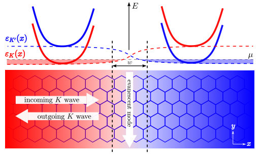
<figcaption class="paper-figure-caption"><b>Fig 1.</b> Figure 1. Schematic illustration of a valley domain wall along the armchair direction. Energy bands on the two sides of a domain wall illustrating the spatial variation of valley polarization ετ(x) along the x direction, with µ being the chemical potential. The valley flavor is exchanged across the domain wall: K for x &lt; 0 and K′ for x &gt; 0. For a step-function wall, an incoming K wave is reflected off of an evanescent K mode, which carries current along the domain wall, into an outgoing K wave. Perfect reflection also occurs when the domain wall has finite width w as along as there is no intervalley coherence in the wall.</figcaption>
</figure>
<figure class="paper-figure-card">
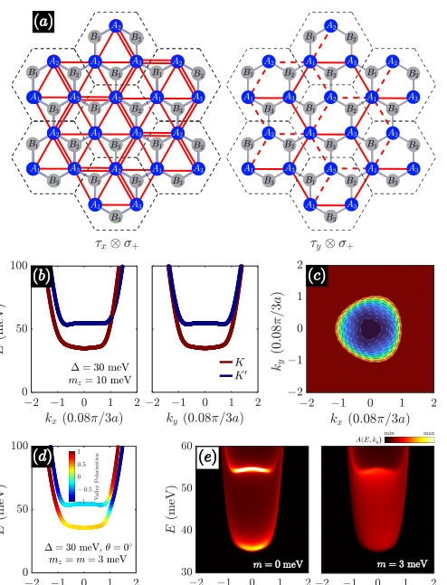
<figcaption class="paper-figure-caption"><b>Fig 2.</b> Figure 2. Intervalley scattering on the active sublattice. (a) Schematic hopping model realizing the intervalley mixing interac- tions τxσ+ and τyσ+ with bond strengths distinguished by single, double, and dashed red lines connecting atoms. (b) Bulk band struc- ture of tetralayer rhombohedral graphene along the kx (left) and ky (right) directions with ∆= 30 meV and mz = 10 meV. The color represents valley polarization. (c) Energy map for the conduction band (K valley) in (b) showing the isoenergy contours at carrier densities n = 0, 0.1, 0.2, ..., 1.0 × 1012 cm−2. (d) Band structure with intervalley coupling τxσ+ for mz = m = 3 meV. (e) Spectral function A(E, ky) of a domain wall without...</figcaption>
</figure>
<figure class="paper-figure-card">
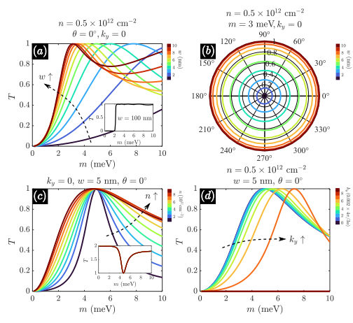
<figcaption class="paper-figure-caption"><b>Fig 3.</b> Figure 3. Transmission across a domain wall with intervalley cou- pling. (a) Transmission as a function of the strength of intervalley coupling m at θ = 0◦, ky = 0, and n = 5 × 1011 cm−2. The in- set shows the transmission of a wide domain wall w = 100 nm. (b) Dependence of the transmission on the angle θ of the intervalley in- teraction at m = 3 meV, ky = 0, and n = 5 × 1011 cm−2. Different colored curves in (a,b) correspond to different domain wall widths w. (c) Transmission at different filling densities in the quarter-metal phase for ky = 0, w = 5 nm, and θ = 0◦. The inset shows transmis- sion at a density outside the quarter-metal phase where both valleys are occupied on both sides of...</figcaption>
</figure>
<figure class="paper-figure-card">
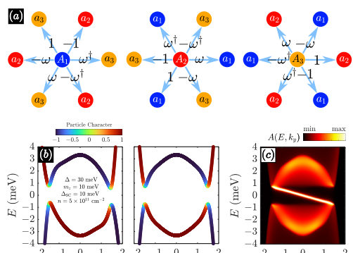
<figcaption class="paper-figure-caption"><b>Fig 4.</b> Figure 4. Finite-momentum chiral p-wave superconductivity. (a) Real-space representation of the hopping processes between the elec- tron (Ai) and hole (ai) sectors in Eq. (10). (b) Bulk band structure along the kx and ky directions color-coded by particle character (+1 for electrons and −1 for holes). (c) Spectral function for a semi- infinite plane with an armchair termination showing the presence of a chiral Majorana branch traversing the bulk gap due to nontrivial Chern topology.</figcaption>
</figure>
<figure class="paper-figure-card">
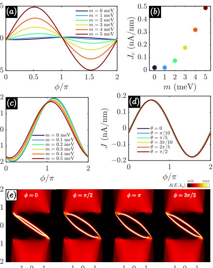
<figcaption class="paper-figure-caption"><b>Fig 5.</b> Figure 5. Current-phase relation for supercurrent across an SNS’ Josephson junction. (a) CPR for different values of intervalley co- herence m ∈[0, 1, 2, 3, 4, 5] meV with θ = 0◦. (b) Plot of the super- current density amplitude Jc as a function of m at θ = 0◦. (c) Same as (a) but for a smaller range of m ∈[0, 0.1, 0.2, 0.3, 0.4, 0.5] meV. (d) CPR at fixed m = 3 meV for different values of θ. (e) BdG spec- tral function for different values of ϕ with m = 5 meV and θ = 0. For all plots, N = 4, mz = 30 meV, n = 5 × 1011 cm−2, w = 2 nm, ∆= 30 meV, and ∆SC = 10 meV.</figcaption>
</figure>
</div>

<p><strong>Summary.</strong> This theoretical work elucidates that domain walls in valley-polarized graphene act as electronic valves, blocking current unless intervalley hybridization is present. This mechanism is critical both for mediating normal state electron transport and sustaining supercurrent flow across superconducting junctions connecting opposite-chirality regions.</p>
<p><strong>Why it may be interesting.</strong> The concept of a 'valley valve' controlling charge transport via symmetry-protected coupling mechanisms is highly relevant to understanding topological superconductivity and engineered quantum devices in 2D materials.</p>
<details>
<summary>Detailed structure</summary>
<p><strong>Main problem.</strong> The study investigates how electron transport across domain walls separating regions with opposite valley polarization is governed by intervalley interactions in symmetry-broken rhombohedral graphene.</p>
<p><strong>Main result.</strong> Intervalley coupling is crucial, acting as a 'valve' that enables both electron transmission in the normal state and supports an appreciable supercurrent in the superconducting state.</p>
<p><strong>Method.</strong> The work employs Green's function formalism, Bogoliubov-de Gennes (BdG) theory for superconductivity, and numerical simulations to solve boundary value problems across domain walls.</p>
<p><strong>Model / system.</strong> The system is rhombohedral multilayer graphene polarized by a displacement field, exhibiting time-reversal symmetry breaking. The analysis uses effective Hamiltonians incorporating valley polarization ($\epsilon_K(x), \epsilon_{K'}(x)$) and superconducting pairing amplitudes ($\Delta_{	ext{SC}}$).</p>
<p><strong>Key observables.</strong> Electron transmission coefficient ($T$), Supercurrent density ($J_c$), Current-Phase Relation (CPR).</p>
<p><strong>Important parameters / regimes.</strong> Domain wall width ($w$), intervalley coupling strength ($m$), gap magnitude ($\Delta$), and chemical potential ($\mu$).</p>
<p><strong>Assumptions / limitations.</strong> The analysis often assumes an abrupt domain wall approximation or uses continuum models for the superconducting phase; spin polarization is sometimes assumed uniform.</p>
<p><strong>Figures summary.</strong> Figures illustrate schematic domain walls, transmission dependence on coupling strength ($m$) and angle ($    heta$), and the Current-Phase Relation (CPR) showing supercurrent modulation with the pairing phase $\phi$.</p>
<p><strong>Paper structure.</strong> The paper progresses from analyzing normal state transport across abrupt domain walls to deriving the necessary intervalley couplings. It then extends this analysis to the superconducting regime using BdG theory, calculating the resulting Josephson supercurrent.</p>
</details>
<details>
<summary>Abstract</summary>
<p>Rhombohedral multilayer graphene polarized by a moderate perpendicular displacement field hosts a time-reversal-symmetry-breaking valley-and-spin-polarized metallic phase that may condense into a chiral superconductor. Recent magnetic imaging and transport measurements in this unconventional system suggest the presence of domain walls both in the metallic and superconducting phases. In this work, we show that valley domain walls are impenetrable barriers to transport in the metallic regime. Transmission through such a domain wall must therefore be mediated by intervalley interactions. We derive the symmetry-allowed terms and show via microscopic numerical simulations that they enable the transmission of electrons across the domain wall. In the superconducting phase, we find that intervalley mixing is crucial for supporting an appreciable supercurrent through a SNS' Josephson junction that connects opposite-chirality superconducting regions. Taken together, our work elucidates the nature of domain walls in these experimentally relevant multilayer systems and emphasizes the critical role of intervalley hybridization plays in governing their transport properties.</p>
</details>
<p><sub><a href="#top">↑ back to top</a></sub></p>

<p><a id="paper-2606.15666"></a></p>
<h3 id="van-der-waals-engineering-of-valley-polarization-in-wse2-via-kagome-v2o3-monolayer-heterostructure-through-magnetic-proximity-effect"><a href="http://arxiv.org/abs/2606.15666v1">Van der waals engineering of valley polarization in WSe2 via kagome V2O3 monolayer heterostructure through magnetic proximity effect</a></h3>
<p><strong>Authors:</strong> Fazle Subhan<br>
<strong>Type:</strong> theory · <strong>Category:</strong> strongly correlated electrons · <strong>PDF:</strong> <a href="https://arxiv.org/pdf/2606.15666v1">https://arxiv.org/pdf/2606.15666v1</a><br>
<strong>Analysis basis:</strong> full PDF text, analyzed in chunks
<strong>Topic relevance:</strong> <code>exotic spin models in light-matter</code> <strong>3/5</strong> · <code>spintronics-quantum-optics interface</code> <strong>3/5</strong> · <code>Keldysh / 2PI / non-Gaussian methods</code> <strong>1/5</strong> · <code>analog quantum simulation</code> <strong>1/5</strong> · <code>driven-dissipative phase transition</code> <strong>1/5</strong> · <code>methods for driven-dissipative</code> <strong>1/5</strong></p>
<div class="figure-strip-hint">↔ Scroll figures horizontally</div>
<div class="paper-figures-scroll">
<figure class="paper-figure-card">
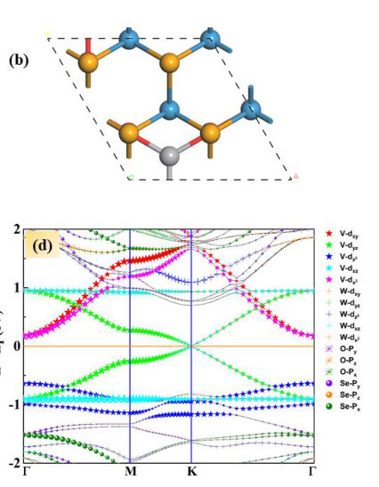
<figcaption class="paper-figure-caption"><b>Fig 1.</b> Figure 1: Structural illustration for V2O3/WSe2 vdW heterostructure on (a) side and (b) top view, respectively.</figcaption>
</figure>
<figure class="paper-figure-card">
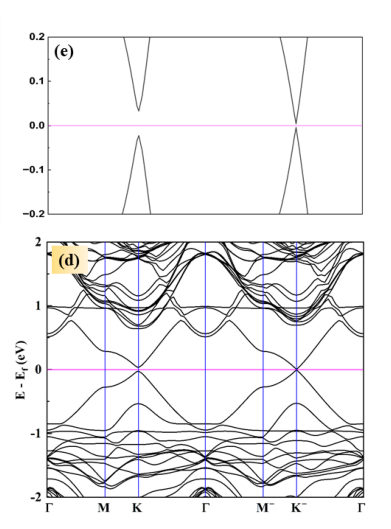
<figcaption class="paper-figure-caption"><b>Fig 2.</b> Figure 2: A schematic diagram of the band structures for valley dependent optical selection rule in (a) WSe2 ML</figcaption>
</figure>
<figure class="paper-figure-card">
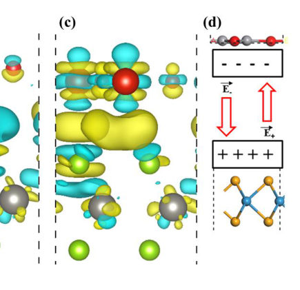
<figcaption class="paper-figure-caption"><b>Fig 3.</b> Figure 3: Charge density difference of V2O3/WSe2 vdW heterostructure of (a) pristine, (b) + 0.6 and (c) – 0.6</figcaption>
</figure>
<figure class="paper-figure-card">
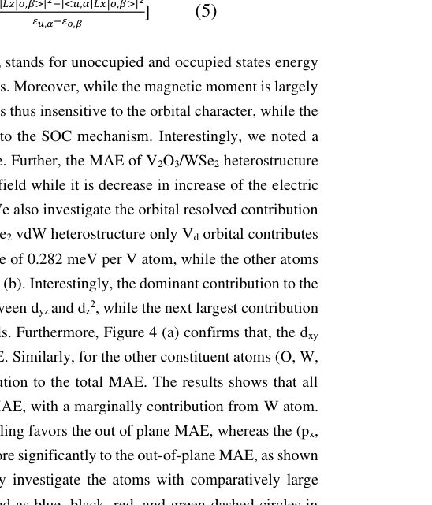
<figcaption class="paper-figure-caption"><b>Fig 4.</b> Figure 1 (a) respectively for V, O, W and Se atoms in the crystal structure of V2O3/WSe2 heterostructure.</figcaption>
</figure>
<figure class="paper-figure-card">
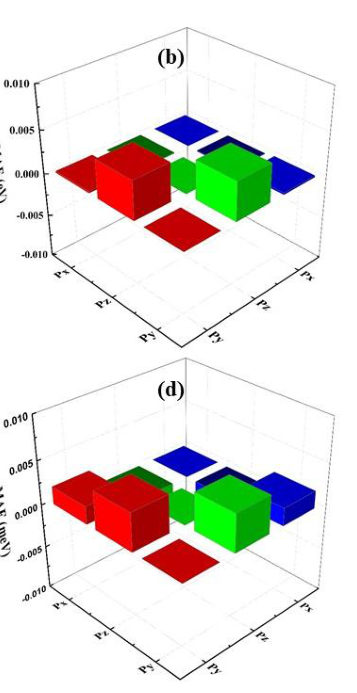
<figcaption class="paper-figure-caption"><b>Fig 5.</b> Figure 4: SOC resolved MAE in pristine V2O3/ WSe2 vdW heterostructure of (a) V (b) O (c) W and (d) Se</figcaption>
</figure>
</div>

<p><strong>Summary.</strong> This theoretical study proposes an oxide-driven approach to realize robust valleytronic devices by creating a $    ext{V}_2    ext{O}_3/   ext{WSe}_2$ heterostructure. The intrinsic ferromagnetism of the oxide induces a significant, field-free valley splitting in $  ext{WSe}_2$. Furthermore, the research demonstrates that applying external electric fields can enhance this valley polarization and maintain high operational temperatures.</p>
<p><strong>Why it may be interesting.</strong> The ability to engineer robust quantum phenomena like valley polarization using proximity coupling with a correlated oxide ($    ext{V}_2    ext{O}_3$) provides a powerful, tunable platform for simulating spin-valley coupling mechanisms relevant in AMO physics and open quantum systems.</p>
<details>
<summary>Detailed structure</summary>
<p><strong>Main problem.</strong> Achieving a robust valley splitting in transition metal dichalcogenides (TMDs) at zero magnetic field is challenging for next-generation valleytronic and spintronic devices.</p>
<p><strong>Main result.</strong> The $  ext{V}_2    ext{O}_3/   ext{WSe}_2$ heterostructure exhibits a spontaneous valley splitting of $\sim 10.41 	ext{ meV}$ due to the magnetic proximity effect, which is tunable by external electric fields.</p>
<p><strong>Method.</strong> The study relies heavily on first-principles calculations (DFT+U) combined with advanced simulations like Metropolis Monte Carlo for thermal properties.</p>
<p><strong>Model / system.</strong> The system modeled is a van der Waals heterostructure composed of $ ext{WSe}_2$ coupled with a ferromagnetic monolayer ($   ext{ML}$) of $  ext{V}_2    ext{O}_3$. The calculations investigate structural stability, electronic band structure, and magnetic coupling.</p>
<p><strong>Key observables.</strong> Valley splitting magnitude ($\sim 10.41 	ext{ meV}$), Curie temperature ($500 	ext{ K}$), Magnetocrystalline Anisotropy Energy (MAE), and charge transfer across the interface.</p>
<p><strong>Important parameters / regimes.</strong> External electric field strength ($\pm 0.1 	ext{ eV}/	ext{\AA}$), $  ext{U}_{    ext{eff}}$ parameter for V $3d$ electrons, and lattice mismatch strain values.</p>
<p><strong>Assumptions / limitations.</strong> The calculations assume the use of DFT-D3 vdW corrections and that the magnetic proximity effect is the dominant mechanism inducing valley splitting.</p>
<p><strong>Figures summary.</strong> Figures illustrate SOC-resolved MAE dependence on electric field, electrostatic potential profiles showing dipole moment changes, and temperature-dependent magnetization curves confirming high Curie temperatures.</p>
<p><strong>Paper structure.</strong> The paper systematically analyzes structural optimization, electronic band structure (including Dirac points), magnetic properties ($T_c$, MAE), and finally demonstrates the control mechanism by applying external perpendicular electric fields to enhance valley splitting.</p>
</details>
<details>
<summary>Abstract</summary>
<p>To achieve a robust valley splitting in transition metal dichalcogenides (TMDs) at zero magnetic field is a challenging and elusive goal for valleytronic and spintronic devices. Therefore, in the current study, using the first principles calculations, we introduce an oxide-driven valleytronic platform by employing a two-dimensional ferromagnetic oxide (V2O3) as a magnetic proximity partner for WSe2. We found that the intrinsic ferromagnetism of V2O3 induces a prominent and spontaneous valley splitting of ~ 10.41 meV in WSe2. This pronounced valley polarization mainly originates from the strong interfacial exchange coupling interaction and charge redistribution mediated by V 3d electrons, coupled with the intrinsic spin-orbit coupling of WSe2. Interestingly, this value is significantly greater than the previously reported value for CrI3/WSe2, which corresponds to an effective magnetic field of ~ 10 T. Besides, we also have a high Curie temperature of 500 K, and an out-of-plane magnetic anisotropy energy (MAE) of 0.31 meV, indicating that this oxide-based heterostructure can also be used for near-room temperature operation. Importantly, under the external electric field with a step of 0.1 eV/Å, the ferromagnetism is preserved and an enhancement in Curie temperature and MAE makes this oxide-based heterostructure more valuable for the next generation valleytronic devices. Therefore, these findings establish a new paradigm for realizing tunable, robust, and magnetic field-free valleytronic and spintronic devices for this oxide-based heterostructure. Moreover, this concept can be generalized to other correlated oxide-based TMD systems, providing a versatile strategy for next-generation quantum and functional materials.</p>
</details>
<p><sub><a href="#top">↑ back to top</a></sub></p>

<p><a id="paper-2606.16594"></a></p>
<h3 id="interfacial-magnetotransport-in-a-nii_2graphene-heterostructure"><a href="http://arxiv.org/abs/2606.16594v1">Interfacial Magnetotransport in a NiI_2/Graphene Heterostructure</a></h3>
<p><strong>Authors:</strong> Stasiu Thomas Chyczewski, Xiaotong Xu, Wenjuan Zhu<br>
<strong>Type:</strong> experiment · <strong>Category:</strong> other · <strong>PDF:</strong> <a href="https://arxiv.org/pdf/2606.16594v1">https://arxiv.org/pdf/2606.16594v1</a><br>
<strong>Analysis basis:</strong> full PDF text, analyzed in chunks
<strong>Topic relevance:</strong> <code>exotic spin models in light-matter</code> <strong>3/5</strong> · <code>spintronics-quantum-optics interface</code> <strong>3/5</strong> · <code>Kondo &amp; dissipative impurity</code> <strong>1/5</strong> · <code>analog quantum simulation</code> <strong>1/5</strong> · <code>non-equilibrium dynamics</code> <strong>1/5</strong></p>
<div class="figure-strip-hint">↔ Scroll figures horizontally</div>
<div class="paper-figures-scroll">
<figure class="paper-figure-card">
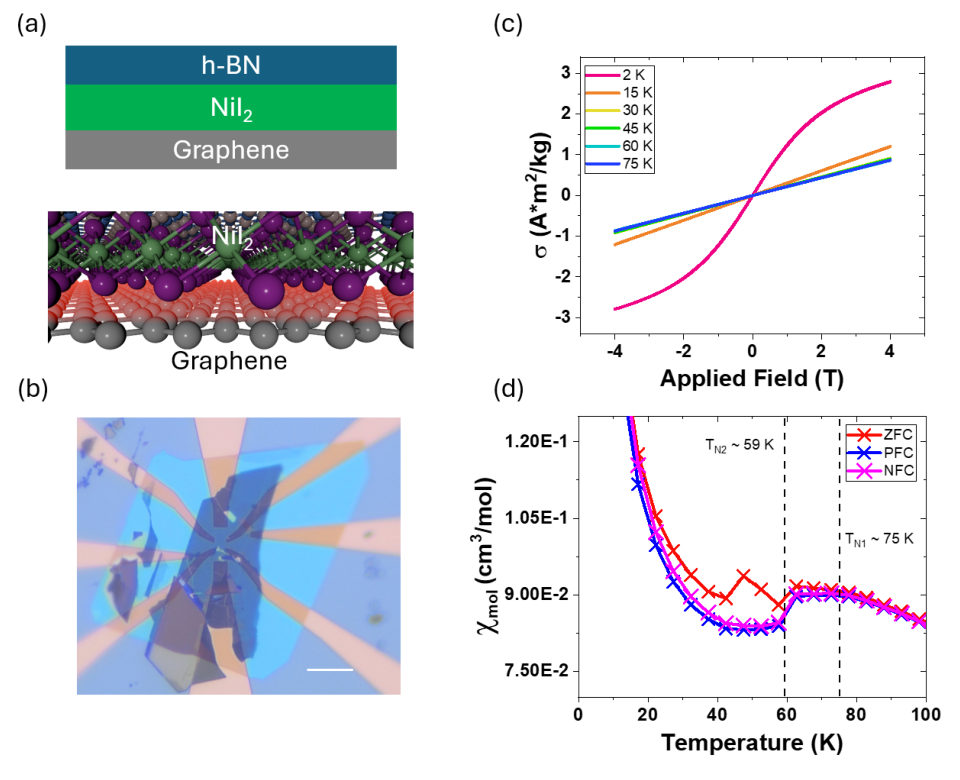
<figcaption class="paper-figure-caption"><b>Fig 1.</b> Figure 1: (a) Basic diagram of the graphene/NiI2 heterostructure. (b) Optical image of a Gr/NiI2/h-BN heterostructure. This sample is made with monolayer graphene (see Fig. S3). Scale bar: 10 µm. (c) Mass-normalized magnetization curves for a field applied in-plane at various temperatures. (d) In-plane susceptibility measurements zoomed in at transition temperatures under zero field cooling (ZFC), negative field cooling (NFC), and positive field cooling (PFC) conditions. Cooling fields were ± 1 T. For measurements across a larger range, see Fig. S2.</figcaption>
</figure>
<figure class="paper-figure-card">
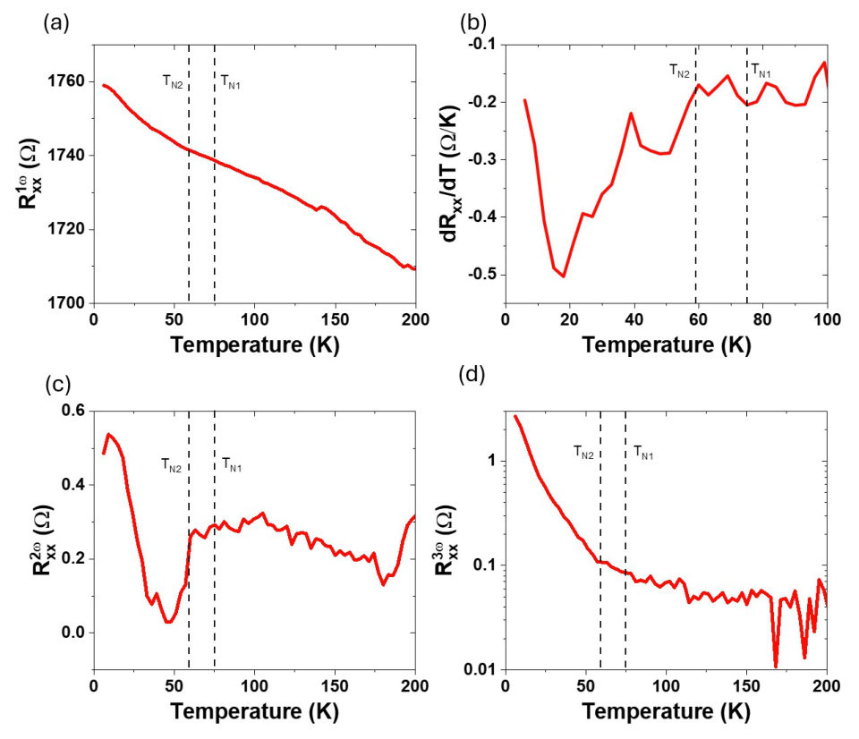
<figcaption class="paper-figure-caption"><b>Fig 2.</b> Figure 2: (a) Fundamental four-point longitudinal resistance vs. temperature (b) First derivative of data in (a). (c) Second harmonic longitudinal resistance vs. temperature. (d) Third harmonic longitudinal resistance vs. temperature. Note (d) is plotted on a log scale. In each plot, the dashed lines correspond to critical temperatures.</figcaption>
</figure>
<figure class="paper-figure-card">
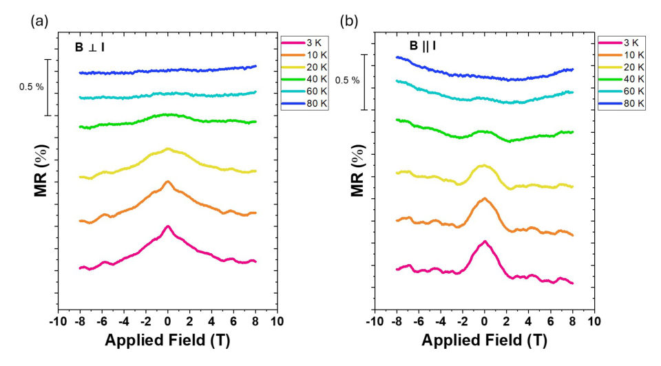
<figcaption class="paper-figure-caption"><b>Fig 3.</b> Figure 3: (a) Magnetoresistance sweeps for an in-plane field applied perpendicular (90 de- grees) to the direction of current flow. (b) Magnetoresistance sweeps for an in-plane field applied parallel (0 degrees) to the direction of current flow. Measurements were conducted with a four-terminal geometry and represent the fundamental (first harmonic) response.</figcaption>
</figure>
<figure class="paper-figure-card">
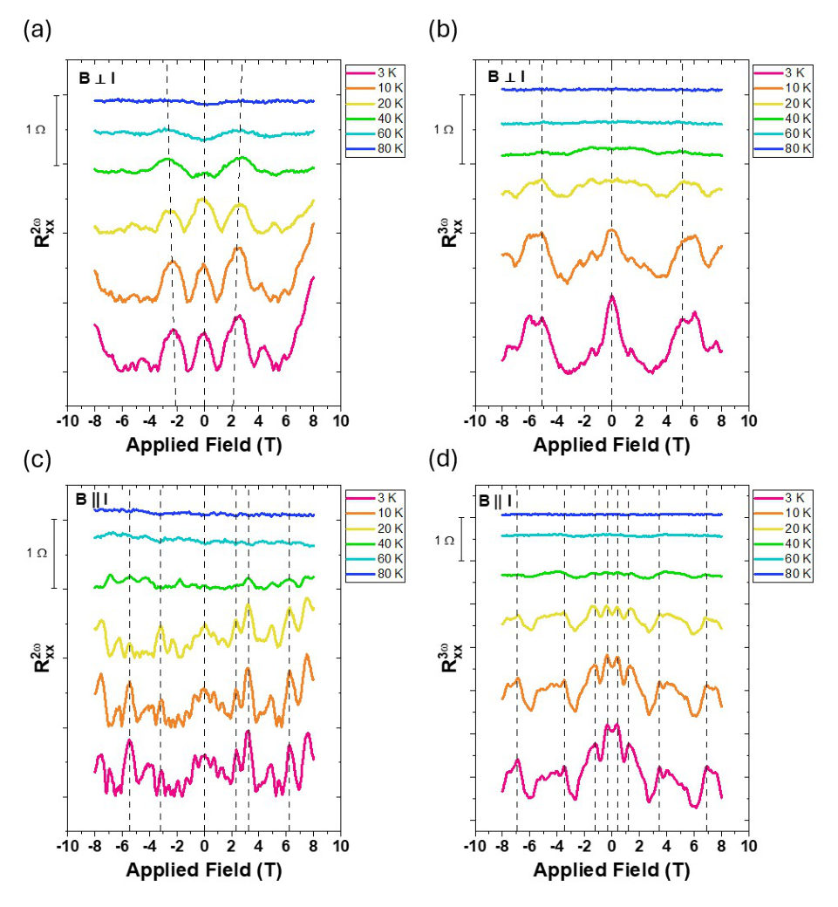
<figcaption class="paper-figure-caption"><b>Fig 4.</b> Figure 4: (a) Second and (b) third harmonic resistance of MR sweeps shown in Fig. 3a (field perpendicular to current). (c) Second and (d) third harmonic resistance of MR sweeps shown in Fig. 3b (field parallel to current). The dashed lines in each figure highlight peaks that appear across lower temperature measurements.</figcaption>
</figure>
</div>

<p><strong>Summary.</strong> The study investigates magnetotransport in $   ext{NiI}_2$/Graphene heterostructures to read out the magnetic state of the insulating $    ext{NiI}_2$. By measuring linear and nonlinear electrical responses, the authors show that characteristic anomalies track $ ext{NiI}_2$'s magnetic transitions. This establishes graphene as a sensitive, non-invasive probe for spintronic applications using insulating van der Waals magnets.</p>
<p><strong>Why it may be interesting.</strong> This work is interesting because it demonstrates an electrical readout mechanism for magnetism in insulating materials using 2D conductors, providing a platform analogous to how quantum systems are probed via coupling to external fields or substrates.</p>
<details>
<summary>Detailed structure</summary>
<p><strong>Main problem.</strong> The study aims to probe magnetic phase behavior within electrically insulating van der Waals magnets ($   ext{NiI}_2$) using electrical transport measurements.</p>
<p><strong>Main result.</strong> Magnetotransport features, particularly large anisotropic low-field peaks in the first harmonic and distinct nonlinear signals in the second harmonic, are observed in graphene/$  ext{NiI}_2$ heterostructures, confirming an interfacial coupling to $   ext{NiI}_2$'s magnetic state.</p>
<p><strong>Method.</strong> The research employs magnetotransport measurements (longitudinal magnetoresistance) and temperature-dependent analysis of nonlinear electrical responses ($ ext{2}\omega$ and $ ext{3}\omega$) on the heterostructure, comparing results against a graphene/h-BN control device.</p>
<p><strong>Model / system.</strong> The physical system is a van der Waals heterostructure composed of monolayer graphene (the conducting readout layer) interfaced with the insulating helical antiferromagnet $   ext{NiI}_2$. The measurements probe magnetic proximity effects at this interface.</p>
<p><strong>Key observables.</strong> First-harmonic longitudinal magnetoresistance ($   ext{MR}$), second-harmonic resistance ($2\omega$), third-harmonic resistance ($3\omega$), and magnetic susceptibility ($\chi$).</p>
<p><strong>Important parameters / regimes.</strong> Multiferroic transition temperature of $    ext{NiI}<em ext_N="ext{N">2$ ($  ext{T}</em>$), in-plane vs. out-of-plane magnetic fields, and measurement harmonics.}2} \approx 59     ext{ K</p>
<p><strong>Assumptions / limitations.</strong> The primary assumption is that the observed transport anomalies are due to interfacial coupling with $   ext{NiI}_2$'s magnetic state, rather than generic graphene properties or purely thermal effects (though Joule heating remains a concern for higher harmonics).</p>
<p><strong>Figures summary.</strong> Figures show basic device diagrams and SQUID M-H curves; subsequent figures detail temperature dependence of linear resistance, first derivative, second harmonic ($2\omega$), and third harmonic ($3\omega$) responses, alongside $ ext{MR}$ sweeps comparing the heterostructure to control graphene.</p>
<p><strong>Paper structure.</strong> The paper follows a structure of presenting the physical system ($ ext{NiI}_2$/Graphene), detailing multiple measurement techniques (linear MR, nonlinear harmonics, temperature dependence), and systematically contrasting the results against a non-magnetic control device to isolate the magnetic contribution.</p>
</details>
<details>
<summary>Abstract</summary>
<p>We investigate magnetotransport in a van der Waals heterostructure composed of monolayer graphene and the insulating helical antiferromagnet NiI$_2$. While NiI$_2$ is highly resistive and thus poorly suited for direct transport measurements, we demonstrate that magnetotransport in an adjacent graphene layer provides an electrical readout of magnetic-state-dependent interfacial behavior. Most notably, first-harmonic longitudinal magnetoresistance under in-plane magnetic fields exhibits large, anisotropic low-field peaks that are absent from a monolayer graphene/h-BN control device and are suppressed above the multiferroic transition temperature of NiI$_2$. Temperature-dependent harmonic measurements provide complementary evidence: the second-harmonic resistance shows the clearest nonlinear contrast relative to the control device, while the third harmonic contains a larger generic nonlinear and thermal background that is nevertheless modified in the heterostructure. These results demonstrate that graphene-based transport measurements offer a sensitive, non-invasive probe of magnetic phase behavior in electrically insulating van der Waals magnets, opening routes toward spintronic devices based on insulating vdW multiferroics.</p>
</details>
<p><sub><a href="#top">↑ back to top</a></sub></p>

<p><a id="paper-2606.15487"></a></p>
<h3 id="the-extended-kdv-equation-augmented-lagrangian-and-variational-solitary-waves-with-applications-to-dispersive-hydrodynamics"><a href="http://arxiv.org/abs/2606.15487v1">The Extended KdV Equation: Augmented Lagrangian and Variational Solitary Waves with Applications to Dispersive Hydrodynamics</a></h3>
<p><strong>Authors:</strong> Saleh Baqer, Hamid Said<br>
<strong>Type:</strong> theory · <strong>Category:</strong> other · <strong>PDF:</strong> <a href="https://arxiv.org/pdf/2606.15487v1">https://arxiv.org/pdf/2606.15487v1</a><br>
<strong>Analysis basis:</strong> full PDF text, analyzed in chunks
<strong>Topic relevance:</strong> <code>Keldysh / 2PI / non-Gaussian methods</code> <strong>3/5</strong> · <code>driven-dissipative phase transition</code> <strong>2/5</strong> · <code>Frenkel-Kontorova</code> <strong>1/5</strong> · <code>methods for driven-dissipative</code> <strong>1/5</strong> · <code>non-equilibrium dynamics</code> <strong>1/5</strong> · <code>non-equilibrium universality</code> <strong>1/5</strong></p>
<div class="figure-strip-hint">↔ Scroll figures horizontally</div>
<div class="paper-figures-scroll">
<figure class="paper-figure-card">
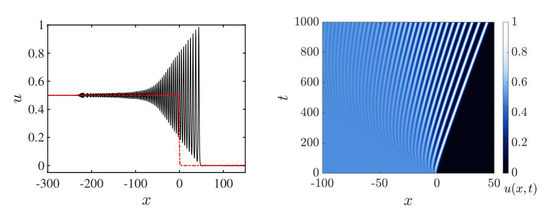
<figcaption class="paper-figure-caption"><b>Fig 1.</b> Figure 1: Dispersive shock regime governed by the eKdV equation (67), together with a space–time contour plot of a portion of the solution u(x, t) over the interval x ∈[−100, 50]. The red (dashed) line indicates the initial jump discontinuity (72). The coefficients B1, B2, B3, and B4 are chosen as the shallow water wave coefficients (2). Here, α = β = 0.1, ∆= 0.5, and t = 1000. (Color version online).</figcaption>
</figure>
<figure class="paper-figure-card">
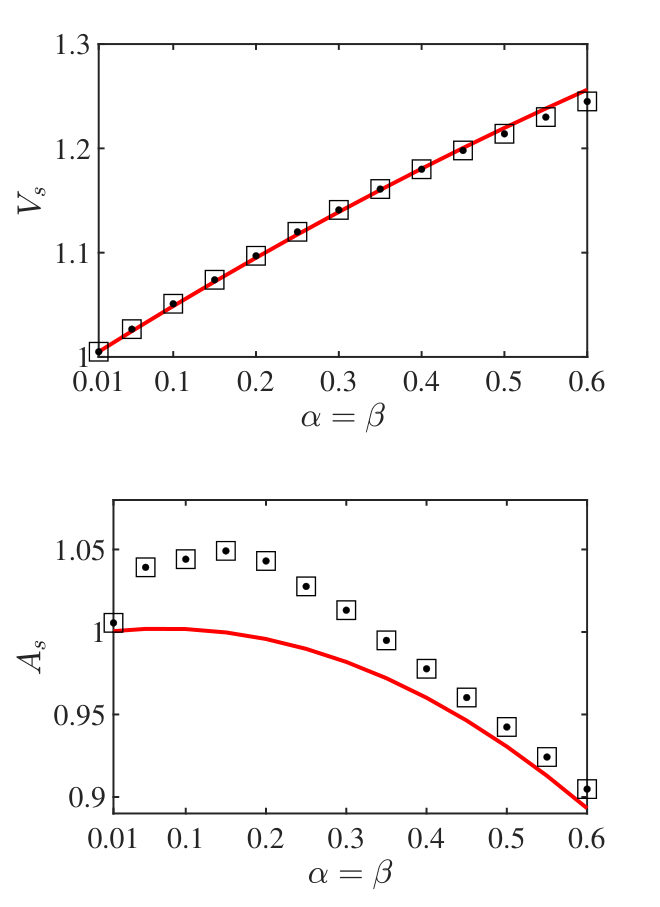
<figcaption class="paper-figure-caption"><b>Fig 2.</b> Figure 2: Comparisons for solitonic wave parameters governed by the eKdV equation (1). Numerical solutions: black (dotted) box; theoretical solutions: red (solid) line. (a) compar- ison for eKdV solitary wave velocity, (b) comparison for eKdV solitary wave height. The coefficients B1, B2, B3, and B4 are taken to be the shallow water wave coefficients (2). Here, a0 = 1 and t = 40. (Color version online).</figcaption>
</figure>
<figure class="paper-figure-card">
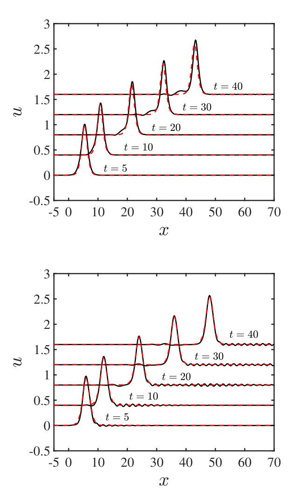
<figcaption class="paper-figure-caption"><b>Fig 3.</b> Figure 3: Evolution of shallow water solitary waves governed by the eKdV equation (1). Numerical solutions: black (solid) line; theoretical solutions: red (dashed) line. In (a), the asymptotic parameters are set to α = β = 0.15. In (b), the asymptotic parameters are set to α = β = 0.45. Compared to (a), the solitary wave tail emits resonant radiation. The coefficients B1, B2, B3, and B4 are taken to be the shallow water wave coefficients (2). Here, a0 = 1. (Color version online).</figcaption>
</figure>
<figure class="paper-figure-card">
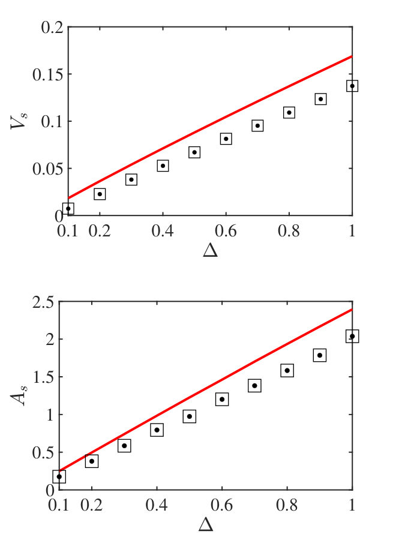
<figcaption class="paper-figure-caption"><b>Fig 4.</b> Figure 4: Comparisons for dispersive shock parameters governed by the eKdV equation with- out the transport term ux (67). Numerical solutions: black (dotted) box; theoretical solutions: red (solid) line. (a) comparison for the lead solitary wave edge velocity of eKdV DSW, (b) comparison for the lead solitary wave edge height of eKdV DSW. The coefficients B1, B2, B3, and B4 are chosen as the shallow water wave coefficients (2). Here, α, β = 0.15 and t = 1000. (Color version online).</figcaption>
</figure>
</div>

<p><strong>Summary.</strong> This work develops a comprehensive variational theory to find solitary wave solutions for the extended Korteweg-de Vries (eKdV) equation, which models dispersive water waves. By employing an augmented Lagrangian method, the authors derive explicit formulas for soliton parameters and successfully apply these results to estimate characteristics of Dispersive Shock Waves. The findings are validated by strong agreement with direct numerical simulations.</p>
<p><strong>Why it may be interesting.</strong> Although focused on fluid dynamics, the rigorous application of generalized variational principles (like those involving Luke's Lagrangian) to derive exact solutions for complex nonlinear PDEs is a powerful mathematical technique relevant to finding conserved quantities or effective Hamiltonians in quantum field theories or open quantum systems.</p>
<details>
<summary>Detailed structure</summary>
<p><strong>Main problem.</strong> To derive and analyze single solitary wave solutions for the Extended Korteweg-de Vries (eKdV) equation, which models dispersive hydrodynamic phenomena.</p>
<p><strong>Main result.</strong> The authors derived explicit second-order formulas for the solitary wave height, velocity, and inverse width, showing strong agreement with direct numerical simulations for both isolated solitons and Dispersive Shock Waves (DSWs).</p>
<p><strong>Method.</strong> The primary method involves extending the averaged Lagrangian approach using an augmented Lagrangian model incorporating Lagrange multipliers to handle non-conservative constraints.</p>
<p><strong>Model / system.</strong> The system is governed by the eKdV equation, a fifth-order nonlinear dispersive PDE arising from approximations of shallow water wave equations. This models phenomena in fluid mechanics and plasma physics.</p>
<p><strong>Key observables.</strong> Solitary wave height ($A_s$), solitary wave velocity ($V_s$), inverse width ($\omega_s$), and the leading edge parameters for DSWs.</p>
<p><strong>Important parameters / regimes.</strong> Small amplitude/long wavelength parameters ($\alpha, eta$) are crucial; the results show asymptotic reduction to classical KdV when higher-order terms vanish.</p>
<p><strong>Assumptions / limitations.</strong> The analysis assumes a single solitary wave solution with a sech^2 profile and utilizes approximations like the DSW equal amplitude approximation for shock dynamics.</p>
<p><strong>Figures summary.</strong> Figures compare theoretical variational predictions against direct numerical simulations, showing agreement for both isolated solitons and the lead edge of dispersive shock waves across various parameter regimes.</p>
<p><strong>Paper structure.</strong> The paper systematically develops the theory by first deriving the eKdV equation from shallow water wave approximations (Boussinesq equations), then applying advanced variational techniques using an augmented Lagrangian to find the solitary wave solution, and finally applying this framework to estimate parameters for DSWs.</p>
</details>
<details>
<summary>Abstract</summary>
<p>In this work, we extend the method of averaged Lagrangian to the study of the general second-order (non-conservative) extended Korteweg--de Vries equation, known as the eKdV equation. Building on the framework introduced in [18], we construct a master (augmented) Lagrangian, modeled on Luke's Lagrangian, that incorporates the governing constraints at the appropriate asymptotic orders via the method of Lagrange multipliers. Averaging the resulting Euler-Lagrange equations in the traveling wave setting yields the existence of a (single) solitary wave solution with a $\operatorname{sech}^2$ profile. Explicit second-order formulas are obtained for the height of the solitary wave, together with the solitary wave velocity and inverse width, in terms of a fixed amplitude parameter. A key feature of the derived expressions is their asymptotic reduction to the classical KdV results when the first-order terms are retained. To assess the robustness and utility of the variational solitonic solutions, the derived formulas are subsequently applied, via the dispersive shock equal amplitude approximation method, to estimate the height and velocity of the leading solitary wave edge of dispersive shock waves governed by the eKdV Riemann problem. Theoretical predictions for the relevant wave parameters in both the eKdV solitary wave and dispersive shock wave problems are compared with direct numerical simulations and found to be in strong agreement.</p>
</details>
<p><sub><a href="#top">↑ back to top</a></sub></p>

<p><a id="paper-2606.15776"></a></p>
<h3 id="spin-dependent-electron-transfer-through-a-ring-wire-coupled-junction-role-of-in-plane-electric-field"><a href="http://arxiv.org/abs/2606.15776v1">Spin-dependent electron transfer through a ring-wire coupled junction: Role of in-plane electric field</a></h3>
<p><strong>Authors:</strong> Prabhab Patra, Santanu K. Maiti<br>
<strong>Type:</strong> theory · <strong>Category:</strong> other · <strong>PDF:</strong> <a href="https://arxiv.org/pdf/2606.15776v1">https://arxiv.org/pdf/2606.15776v1</a><br>
<strong>Analysis basis:</strong> full PDF text, analyzed in chunks
<strong>Topic relevance:</strong> <code>spintronics-quantum-optics interface</code> <strong>3/5</strong> · <code>non-equilibrium dynamics</code> <strong>2/5</strong> · <code>Keldysh / 2PI / non-Gaussian methods</code> <strong>1/5</strong> · <code>Kondo &amp; dissipative impurity</code> <strong>1/5</strong> · <code>methods for driven-dissipative</code> <strong>1/5</strong></p>
<div class="figure-strip-hint">↔ Scroll figures horizontally</div>
<div class="paper-figures-scroll">
<figure class="paper-figure-card">
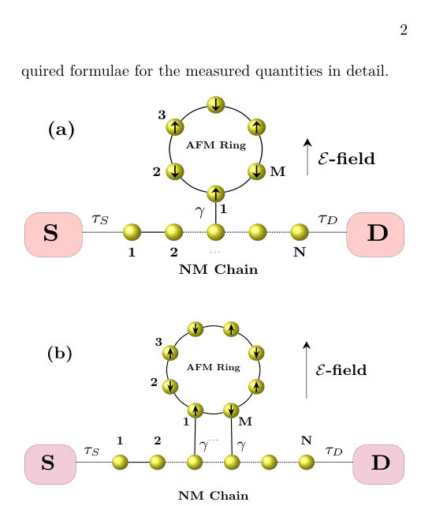
<figcaption class="paper-figure-caption"><b>Fig 1.</b> FIG. 1: (Color online). A schematic representation of the junction setup. A non-magnetic (NM) wire is connected to a side-attached antiferromagnetic (AFM) ring, positioned be- tween the source and drain electrodes. Depending upon the number of wire-ring couplings, two distinct junction configu- rations are considered: (a) single-coupling (Junction 1) and (b) double-coupling (Junction 2). Along with this, an ex- ternal in-plane electric field, acting perpendicular to the NM wire, is applied to the system.</figcaption>
</figure>
<figure class="paper-figure-card">
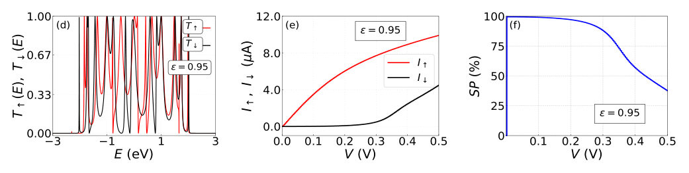
<figcaption class="paper-figure-caption"><b>Fig 2.</b> FIG. 2: (Color online). Spin-dependent transport characteristics of junction 1. Energy-dependent transmission spectra are presented in (a) and (d). The corresponding bias-voltage dependence of the spin-resolved current and spin polarization is shown in (b), (e) and (c), (f), respectively. Figures (a)–(c) correspond to ε = 0, whereas figures (d)–(f) are obtained for ε = 0.95.</figcaption>
</figure>
<figure class="paper-figure-card">
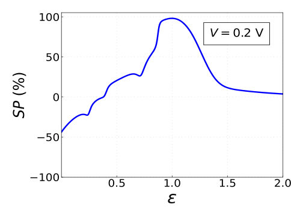
<figcaption class="paper-figure-caption"><b>Fig 3.</b> FIG. 3: (Color online). Variation of spin polarization with the in-plane electric field at a constant bias voltage V = 0.2 V for junction 1.</figcaption>
</figure>
<figure class="paper-figure-card">
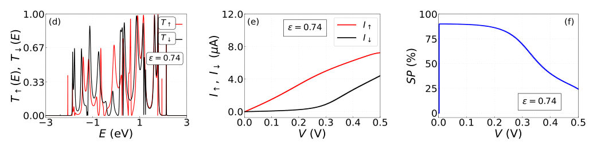
<figcaption class="paper-figure-caption"><b>Fig 4.</b> FIG. 4: (Color online). Spin-dependent transport characteristics of junction 2. The energy dependence of the transmission probability is displayed in (a) and (d). The corresponding spin-dependent current and spin polarization as functions of bias voltage are shown in (b), (e) and (c), (f), respectively. Figures (a)–(c) correspond to ε = 0, while figures (d)–(f) represent the case ε = 0.74.</figcaption>
</figure>
<figure class="paper-figure-card">
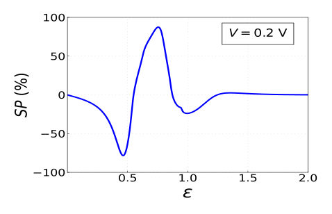
<figcaption class="paper-figure-caption"><b>Fig 5.</b> FIG. 5: (Color online). Variation of spin polarization with the in-plane electric field at a constant bias voltage V = 0.2 V for junction 2.</figcaption>
</figure>
</div>

<p><strong>Summary.</strong> The paper theoretically investigates how an applied in-plane electric field controls spin polarization during electron transport across a hybrid junction linking a non-magnetic wire to an antiferromagnetic ring. Using NEGF formalism, the authors show that this structure can function as a highly tunable spintronic device. The results confirm that external fields provide an efficient mechanism to break symmetry and achieve near 100% spin filtering.</p>
<p><strong>Why it may be interesting.</strong> This work models spin-filtering effects in low-dimensional magnetic nanostructures using advanced quantum transport theory (NEGF), which is highly relevant for understanding engineered spintronic devices that interact with external fields.</p>
<details>
<summary>Detailed structure</summary>
<p><strong>Main problem.</strong> The study investigates spin-dependent electron transfer through a hybrid magnetic system composed of an NM wire coupled to an AFM mesoscopic ring.</p>
<p><strong>Main result.</strong> The in-plane electric field acts as a powerful, externally controllable tuning parameter capable of inducing or enhancing significant spin polarization (SP) in the junction.</p>
<p><strong>Method.</strong> Transport properties are calculated using the Non-Equilibrium Green's Function (NEGF) formalism within a tight-binding framework.</p>
<p><strong>Model / system.</strong> The system consists of an NM wire coupled to a side-attached AFM mesoscopic ring, placed between two non-magnetic electrodes. The Hamiltonian incorporates coupling terms and is analyzed for single-coupled versus double-coupled junction geometries.</p>
<p><strong>Key observables.</strong> Spin Polarization (SP), spin-resolved currents ($I_\sigma$), and transmission probabilities ($T_\sigma(E)$).</p>
<p><strong>Important parameters / regimes.</strong> In-plane electric field strength ($\epsilon$), coupling strengths ($\gamma$), bias voltage ($V$), and temperature ($\Theta$).</p>
<p><strong>Assumptions / limitations.</strong> The analysis assumes a clean NM wire and impurity-free AFM ring, though robustness checks are performed across various parameters.</p>
<p><strong>Figures summary.</strong> Figures illustrate the dependence of SP on $\epsilon$ for both single- and double-coupling junctions, showing how symmetry breaking is controlled by the electric field. They also map out parameter space dependencies (e.g., $\gamma$, $\epsilon$) to confirm robust spin filtering.</p>
<p><strong>Paper structure.</strong> The paper systematically analyzes two junction configurations (single vs. double coupling) under varying external fields ($\epsilon$). It first establishes baseline transport, then demonstrates how the electric field breaks symmetry to induce large SP, concluding with robustness checks across temperature and size.</p>
</details>
<details>
<summary>Abstract</summary>
<p>We study spin-dependent transport in a hybrid magnetic system, where a non-magnetic (NM) wire is coupled to a side-attached antiferromagnetic (AFM) mesoscopic ring, placed between two non-magnetic electrodes subject to an in-plane electric field oriented perpendicular to the NM wire. The system is described within a tight-binding (TB) framework, and transport properties are computed using the non-equilibrium Green's function (NEGF) formalism. We consider two junction configurations distinguished by the wire-ring coupling: a single-coupled junction and a double-coupled junction. In the single-coupled configuration, the coupling geometry alone breaks the spin symmetry, yielding a finite spin polarization (SP) even without any external field. The in-plane electric field further enhances the symmetry breaking in both configurations, serving as an efficient tuning parameter that drives the SP nearly $100\%$ in the low-bias region. In the double-coupled configuration, spin symmetry is preserved in the absence of the external field, and the electric field acts as a sole source of symmetry breaking, producing a large SP. Finite temperature effects and different system sizes are examined, confirming the robustness of the observed features. To validate the findings over a wide parameter space, we considered different sets of parameters and found that the key signatures remain unchanged. Our results demonstrate that such hybrid structures are promising candidates for realizing an externally controllable spintronic device in low-dimensional systems.</p>
</details>
<p><sub><a href="#top">↑ back to top</a></sub></p>

<p><a id="paper-2606.16936"></a></p>
<h3 id="time-of-flight-photon-spectroscopy-for-scanning-tunneling-microscopy-luminescence"><a href="http://arxiv.org/abs/2606.16936v1">Time-of-flight photon spectroscopy for scanning tunneling microscopy luminescence</a></h3>
<p><strong>Authors:</strong> Lebin Yu, Jiří Doležal, Maximilian Rödel, Amandeep Sagwal, Benjamin Frölich, Martin Švec, Fabian Donat Natterer<br>
<strong>Type:</strong> experiment · <strong>Category:</strong> other · <strong>PDF:</strong> <a href="https://arxiv.org/pdf/2606.16936v1">https://arxiv.org/pdf/2606.16936v1</a><br>
<strong>Analysis basis:</strong> full PDF text, analyzed in chunks
<strong>Topic relevance:</strong> <code>interference shaping light</code> <strong>3/5</strong> · <code>quantum optics experiment</code> <strong>3/5</strong> · <code>quantum measurements</code> <strong>1/5</strong> · <code>spintronics-quantum-optics interface</code> <strong>1/5</strong></p>
<div class="figure-strip-hint">↔ Scroll figures horizontally</div>
<div class="paper-figures-scroll">
<figure class="paper-figure-card">
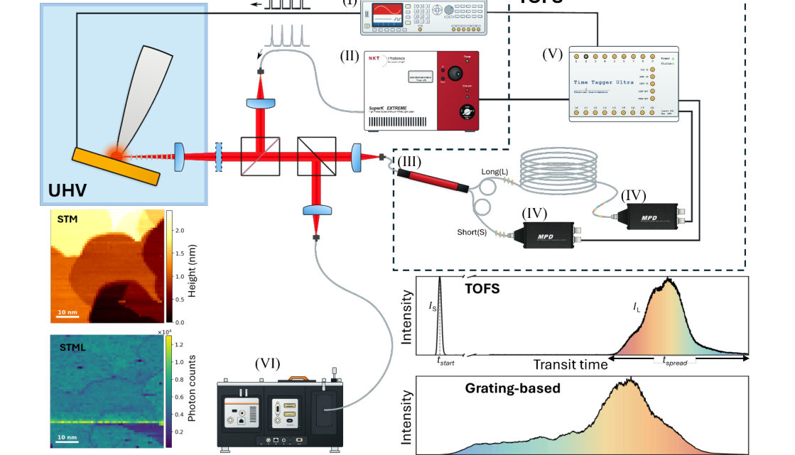
<figcaption class="paper-figure-caption"><b>Fig 1.</b> Figure 1: Sketch of the experimental setup used for time-of-flight spectroscopy (TOFS) of scanning tunneling microscopy luminescence (STML). An arbitrary waveform generator, AWG (Ⅰ), is used to trigger electroluminescence from the STM junction in an ultrahigh-vacuum (UHV) chamber, while a wavelength tunable laser (Ⅱ) is used for TOFS calibration. The TOFS setup, indicated by the dashed box, consists of a 50:50 fiber splitter (Ⅲ), which divides the photon stream into two optical paths. One branch is coupled through a short fiber to a single-photon avalanche diode, SPAD, (Ⅳ) to define the temporal reference. The other branch propagates through a 1 km-long optical fiber before being detected...</figcaption>
</figure>
<figure class="paper-figure-card">
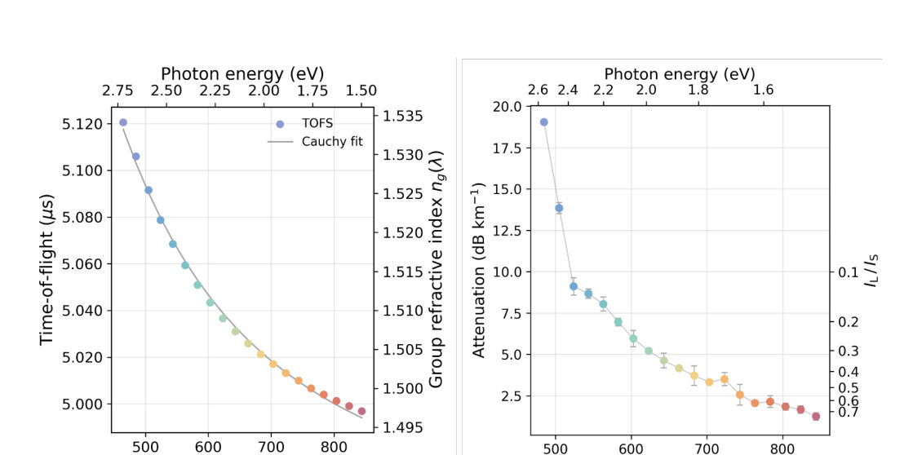
<figcaption class="paper-figure-caption"><b>Fig 2.</b> Figure 2: Dispersion and attenuation characterization of a 1000 𝑚 optical fiber (Thorlabs GIF625-1000) used for TOFS. (a) TOFS arrival times measured as a function of wavelength using a tunable pulsed laser, SPADs, and a grating spectrometer for comparison (see Figure 1). The solid grey line represents a two-term Cauchy fit describing the wavelength-dependent group refractive index 𝑛𝑔(𝜆), with 𝑛𝑔(850 𝑛𝑚) = 1.496 as constraint. The corresponding 𝑛𝑔(𝜆) values are shown on the right axis. (b) Measured attenuation coefficient of the same fiber as a function of wavelength (circles), showing a pronounced increase in loss at shorter wavelengths. The secondary axis indicates the equivalent...</figcaption>
</figure>
<figure class="paper-figure-card">
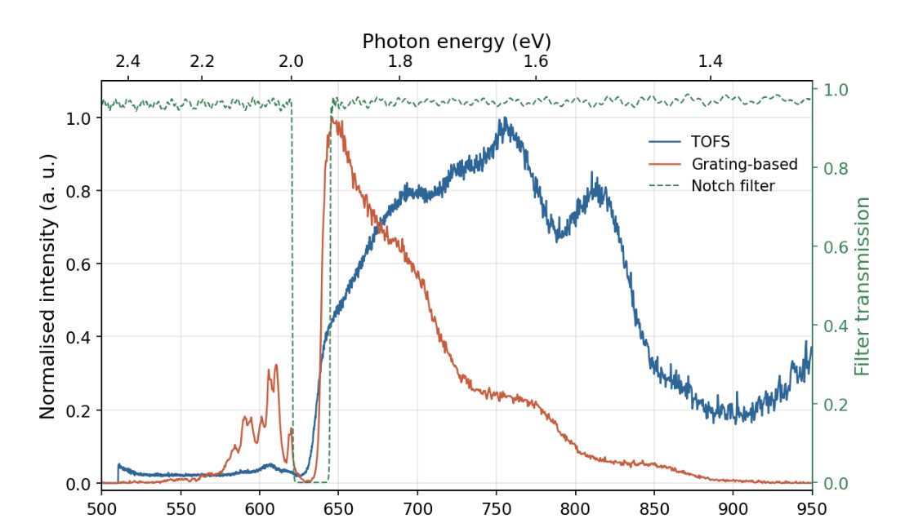
<figcaption class="paper-figure-caption"><b>Fig 3.</b> Figure 3: Simultaneously obtained spectra from TOFS (blue) and grating spectrometer (orange) of Ag-Ag(111) plasmon with an added notch filter (633 ± 13 𝑛𝑚) creating a known spectral feature. The dashed green curve (right axis) indicates the uncalibrated transmission of the notch filter used in the optical path, with vertical dashed lines marking its nominal cutoffs. The TOFS data reproduces the overall spectral profile and extends into the near-infrared, while differences in intensity arise from wavelength-dependent detection efficiency and fiber attenuation. The agreement around the filter edges highlights accurate timing and wavelength calibration and establishes consistency between TOFS...</figcaption>
</figure>
<figure class="paper-figure-card">
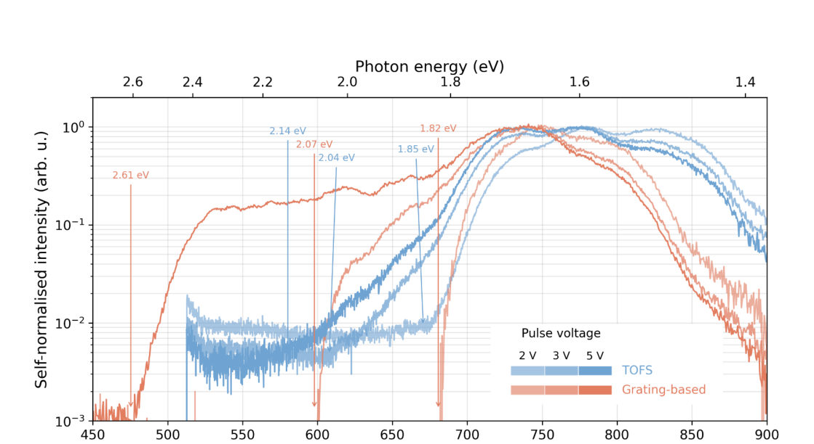
<figcaption class="paper-figure-caption"><b>Fig 4.</b> Figure 4: Voltage dependent photon spectroscopy of Ag-Ag(111) plasmon, as simultaneously seen by the grating spectrograph (orange) and TOFS. The shade encodes the excitation voltage added on top of a 1 V DC bias voltage, and the vertical arrows mark the onset of luminescence at short wavelengths. The discrepancy of the onset threshold compared to the excitation voltage is attributed to the uncorrected AWG calibration and to voltage transients from impedance mismatches.</figcaption>
</figure>
</div>

<p><strong>Summary.</strong> The authors developed and demonstrated a Time-of-Flight Photon Spectrometer (TOFS) coupled with Scanning Tunneling Microscopy Luminescence (STML). This technique uses the wavelength-dependent delay in an optical fiber to measure spectra, offering a cost-effective alternative to traditional spectrometers. The method successfully validates spectral measurements in the near-infrared range by comparing results against established grating techniques.</p>
<p><strong>Why it may be interesting.</strong> This work showcases an advanced optical measurement technique (TOFS) applied to fundamental condensed matter spectroscopy (STML). The ability to perform high-resolution spectroscopy using time-domain measurements rather than traditional dispersive elements is highly relevant for quantum optics and low-light detection systems.</p>
<details>
<summary>Detailed structure</summary>
<p><strong>Main problem.</strong> The primary goal is to obtain spectral information from extremely weak light emission sources, such as Scanning Tunneling Microscopy Luminescence (STML), while minimizing noise and complexity compared to conventional grating spectrometers.</p>
<p><strong>Main result.</strong> The Time-of-Flight Photon Spectrometer (TOFS) was demonstrated to be a straightforward, cost-effective addition to existing STML setups, successfully reproducing spectral profiles in the near-infrared range.</p>
<p><strong>Method.</strong> Spectral analysis is achieved by exploiting the wavelength-dependent group refractive index of a long dispersive optical fiber, which converts photon arrival times into wavelength information via time-of-flight measurement.</p>
<p><strong>Model / system.</strong> The experiment couples STML (exciting plasmons on Ag(111) using voltage pulses) with a TOFS setup. The core physical principle relies on the dispersion relation within an optical fiber, where arrival times are measured by single-photon detectors.</p>
<p><strong>Key observables.</strong> Photon arrival time ($ ext{t}_{    ext{transit}}(\lambda)$), wavelength-dependent group refractive index ($n_g(\lambda)$), and spectral intensity profiles compared between TOFS and grating methods.</p>
<p><strong>Important parameters / regimes.</strong> Fiber length (up to 1000 m), pulse repetition rate, bias voltage/current for STML excitation, and the zero dispersion wavelength ($ ext{ZDW}$).</p>
<p><strong>Assumptions / limitations.</strong> The method assumes monotonic dispersion of the fiber material around the ZDW; discrepancies in intensity between TOFS and grating methods are attributed to uncorrected detection efficiency or attenuation.</p>
<p><strong>Figures summary.</strong> Figures illustrate the experimental setup, raw arrival time histograms showing dispersion (red arriving earlier than blue), and direct spectral comparisons between the TOFS output and a conventional grating spectrograph using known features like notch filters.</p>
<p><strong>Paper structure.</strong> The paper details the construction and calibration of the TOFS system using pulsed sources. It then validates this setup by measuring STML luminescence from Ag-Ag(111), comparing results against established spectroscopic techniques, and discussing limitations related to detector efficiency and timing artifacts.</p>
</details>
<details>
<summary>Abstract</summary>
<p>We build and commission a time-of-flight photon spectrometer (TOFS) for scanning tunneling microscopy luminescence (STML). We obtain the spectrum by exploiting the wavelength dependent refractive index of a long dispersive optical fiber that converts photon arrival times into wavelength information; blue photons are delayed more than red photons. The setup uses a pulsed excitation source, either laser flashes or voltage pulses, to launch the photons from the junction into a single photon detector. The TOFS calibration can be performed and transferred to the STML setup from a separate benchtop experiment using pulsed light sources with known wavelength. We verify the TOFS during STML operation by simultaneously recording luminescence from the Ag-Ag(111) plasmon using a conventional grating spectrometer. Our experiments show that the TOFS is a straightforward and cost-effective addition to existing STML setups with good performance in the near-infrared range. The TOFS is compatible with a drop-in replacement of the single photon detector such as a superconducting nanowire single photon detector or even bolometers that may expand the useful spectral range beyond the abilities of current STML setups.</p>
</details>
<p><sub><a href="#top">↑ back to top</a></sub></p>

<p><a id="paper-2606.15174"></a></p>
<h3 id="a-generalized-long-wave-limit-method-with-spectral-perturbations"><a href="http://arxiv.org/abs/2606.15174v1">A generalized long-wave limit method with spectral perturbations</a></h3>
<p><strong>Authors:</strong> Tianwei Qiu, Zhen Wang<br>
<strong>Type:</strong> theory · <strong>Category:</strong> other · <strong>PDF:</strong> <a href="https://arxiv.org/pdf/2606.15174v1">https://arxiv.org/pdf/2606.15174v1</a><br>
<strong>Analysis basis:</strong> full PDF text, analyzed in chunks
<strong>Topic relevance:</strong> <code>Keldysh / 2PI / non-Gaussian methods</code> <strong>2/5</strong> · <code>analog quantum simulation</code> <strong>2/5</strong> · <code>non-equilibrium dynamics</code> <strong>2/5</strong> · <code>correlated / nonlocal dissipation</code> <strong>1/5</strong> · <code>driven-dissipative phase transition</code> <strong>1/5</strong> · <code>entanglement &amp; information structure</code> <strong>1/5</strong> · <code>methods for driven-dissipative</code> <strong>1/5</strong> · <code>non-equilibrium universality</code> <strong>1/5</strong></p>
<div class="figure-strip-hint">↔ Scroll figures horizontally</div>
<div class="paper-figures-scroll">
<figure class="paper-figure-card">
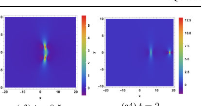
<figcaption class="paper-figure-caption"><b>Fig 1.</b> Fig. 1a: Normal scattering of two lump waves.</figcaption>
</figure>
<figure class="paper-figure-card">

<figcaption class="paper-figure-caption"><b>Fig 2.</b> Fig. 1b: Anomalous scattering of two lump waves.</figcaption>
</figure>
<figure class="paper-figure-card">

<figcaption class="paper-figure-caption"><b>Fig 3.</b> Fig. 1: Normal scattering and anomalous scattering of two lump waves: (a) standard two-lump solution (4) with λ1 = i, λ2 = 7</figcaption>
</figure>
<figure class="paper-figure-card">

<figcaption class="paper-figure-caption"><b>Fig 4.</b> Figure 1 compares the normal and anomalous scattering interactions of two lump waves. As illustrated in the figure, both lumps initially travel along straight trajectories. When the spectral parameters λ1 and λ2 are distinct, the lumps undergo a normal scattering process (see Fig. 1a): they fully recover their original shapes and velocities after the collision. In contrast, when the spectral parameters become degenerate, the lumps exhibit anomalous scattering, during which energy is redistributed and, after the interaction, the lumps propagate along curved paths with non-constant velocities (see Fig. 1b). The long-time asymptotic behavior of the second-order lump solution (13) is summarized...</figcaption>
</figure>
<figure class="paper-figure-card">

<figcaption class="paper-figure-caption"><b>Fig 5.</b> Fig. 2: Evolution of the second-order lump solution (14) in the (X, Y )-coordinates with λ = 1</figcaption>
</figure>
</div>

<p><strong>Summary.</strong> This paper introduces a generalized long-wave limit method incorporating spectral perturbations to systematically construct higher-order, degenerate lump solutions for integrable equations like the KP-I equation. By controlling phase parameters through asymptotic expansions, the authors demonstrate an enhanced ability to generate complex multi-lump structures and analyze anomalous scattering dynamics.</p>
<p><strong>Why it may be interesting.</strong> While not directly about quantum systems, the mathematical techniques developed—analyzing complex multi-soliton interactions, spectral degeneracies, and asymptotic behavior of nonlinear PDEs—are highly relevant to understanding wave phenomena in quantum optics or Bose-Einstein condensates.</p>
<details>
<summary>Detailed structure</summary>
<p><strong>Main problem.</strong> The primary goal is constructing higher-order, degenerate lump solutions for integrable nonlinear wave equations, specifically focusing on the Kadomtsev–Petviashvili I (KP-I) equation.</p>
<p><strong>Main result.</strong> The proposed generalized long-wave limit method successfully generates a broader family of higher-order lump solutions than previous techniques, allowing control over up to M(M+1)/2 degenerate lumps from an M-lump chain.</p>
<p><strong>Method.</strong> It employs a generalized long-wave limit framework that incorporates spectral perturbations and systematically tunes phase parameters through asymptotic expansions of auxiliary functions.</p>
<p><strong>Model / system.</strong> The study is centered on integrable systems, particularly the KP-I equation. The solutions analyzed are non-singular rational structures known as lump solutions, which exhibit complex scattering behavior.</p>
<p><strong>Key observables.</strong> Lump solution amplitudes and velocities; anomalous scattering patterns; the number of supported degenerate lump waves (up to M(M+1)/2).</p>
<p><strong>Important parameters / regimes.</strong> The small parameter $\epsilon$ controlling the long-wave limit, and spectral parameters ($\lambda_j$) which are perturbed as $\lambda + i d_j \epsilon$.</p>
<p><strong>Assumptions / limitations.</strong> The method relies on expanding solutions in powers of a small parameter $\epsilon$, and specific algebraic conditions must be solved by setting lower-order coefficients to zero.</p>
<p><strong>Figures summary.</strong> Figures illustrate the comparison between normal (elastic) and anomalous scattering for two and three lumps, showing curved paths characteristic of energy redistribution. They also show pattern transformations of multi-lump solutions at $t=0$ based on free parameters.</p>
<p><strong>Paper structure.</strong> The paper develops the generalized method by first establishing the framework using spectral perturbations, then applying it to derive second- and third-order lump solutions for KP-I, demonstrating how different parameter choices control structural modes (e.g., merging vs. polygonal arrangements).</p>
</details>
<details>
<summary>Abstract</summary>
<p>A generalized long-wave limit method that introduces spectral perturbations into the long-wave limit framework is proposed for constructing higher-order lump solutions. Within a unified small-parameter framework, the method simultaneously accounts for the degeneracy of spectral parameters, different vanishing rates of wave numbers, and higher-order modulations of the phase parameters. By tuning the phase parameters to push the leading term of the auxiliary function expansion to a prescribed order, the resulting solutions support a controllable number of lump waves and exhibit rich anomalous scattering behavior. Applied to the Kadomtsev--Petviashvili-I equation, second- and third-order lump solutions are systematically derived, and the degeneration of lump chains into higher-order lumps is transparently revealed in the long-wave limit. The method can generate degenerate solutions with up to \(M(M+1)/2\) lumps from an \(M\)-lump chain. Moreover, compared with the previously proposed improved long-wave limit method, the present approach is capable of producing higher-order lump solutions whose long-time asymptotic behavior is independent of the Yablonskii--Vorob'ev polynomials. Its extension to hybrid higher-order lump solutions with distinct spectral parameters is also discussed.</p>
</details>
<p><sub><a href="#top">↑ back to top</a></sub></p>

<p><a id="paper-2606.16156"></a></p>
<h3 id="phase-behavior-of-unilamellar-hybrid-lipid-diblock-copolymer-membranes"><a href="http://arxiv.org/abs/2606.16156v1">Phase Behavior of Unilamellar Hybrid Lipid-Diblock Copolymer Membranes</a></h3>
<p><strong>Authors:</strong> James F. Tallman, Junyu Wu, Antonia Statt<br>
<strong>Type:</strong> theory · <strong>Category:</strong> statistical mechanics · <strong>PDF:</strong> <a href="https://arxiv.org/pdf/2606.16156v1">https://arxiv.org/pdf/2606.16156v1</a><br>
<strong>Analysis basis:</strong> full PDF text, analyzed in chunks
<strong>Topic relevance:</strong> <code>driven-dissipative phase transition</code> <strong>2/5</strong> · <code>non-equilibrium dynamics</code> <strong>2/5</strong> · <code>non-equilibrium universality</code> <strong>2/5</strong> · <code>Frenkel-Kontorova</code> <strong>1/5</strong> · <code>Keldysh / 2PI / non-Gaussian methods</code> <strong>1/5</strong> · <code>methods for driven-dissipative</code> <strong>1/5</strong></p>
<div class="figure-strip-hint">↔ Scroll figures horizontally</div>
<div class="paper-figures-scroll">
<figure class="paper-figure-card">

<figcaption class="paper-figure-caption"><b>Fig 1.</b> FIG. 1. (A) Snapshots of membranes with constant PEO block length (25) and increasing PBD block length from left to right. Solid red vertical lines beside bilayers indicate the hydrophobic thickness of membranes, which increase with increasing PBD block length. (B) Thickness of hydrophobic core of amphiphilic polymer bilayers predicted from theoretical model (lines) and simulated data (points). (C) Thickness of membranes as PBD is increased for constant PEO lengths. (Right) Thickness of membranes as the PEO block length is increased for constant PBD block lengths. (D) Snapshots of membranes with constant PBD block length (25) and increasing PEO length from left to right. Solid red vertical...</figcaption>
</figure>
<figure class="paper-figure-card">

<figcaption class="paper-figure-caption"><b>Fig 2.</b> FIG. 2. (A) Morphologies of hybrid DPPC (Lα)–block co-polymer membranes as a function of polymer content and PBD block length. Shading of regions corresponds to predictions from theoretical expectations, where the boundaries between regions are a function of PEO block length (nP EO = 5: black dashed line, nP EO = 25: purple,nP EO = 45: red), mixed morphology are expected in green regions, lateral phase separation in blue regions, unzipping in red regions, and polymer-rich morphologies in yellow regions. Circle colors reflect morphologies observed from simulations at given state points. (right) Renderings of representative morphologies (lipid tails are colored light blue, lipid head groups:...</figcaption>
</figure>
<figure class="paper-figure-card">

<figcaption class="paper-figure-caption"><b>Fig 3.</b> FIG. 3. Investigation of temperature effect on phase separation of hybrid membranes. Three simulations performed on DPPC membranes with 50 mol % PBD5-b-PEO5 were simulated for 18 µs with a heating/cooling rate of 0.75 K/µs . (A) Phase separation order parameter (0 if perfectly mixed, 1 if perfectly phase separated) plotted as a function of temperature. Order parameter is smoothed via convolution with window size of 20 frames. Green lines indicate data taken during heating and pink lines represent cooling. (B) Top Right: Histograms show positions of lipid tails (blue) and hydrophobic polymer blocks (red) at the low temperature (i) and high temperature (ii) extremes. (C) Area plotted as a...</figcaption>
</figure>
<figure class="paper-figure-card">

<figcaption class="paper-figure-caption"><b>Fig 4.</b> FIG. 4. DOPC and PBD35-b-PEO24 hybrid membrane with 30 mol% polymer simulated at 2.47 kT for 10 µs under NPxzLT ensemble. (A) Morphology of the system after initial equilibration, where the top snapshot shows a top down view of the membrane not showing the hydrophilic beads, and the second snapshot shows a side view of the membrane. (B) Morphology of the system after 10 µs of simulation from top down and side view. (C) Counts of lipids (blue) and polymers (red) measured in the center (x-coordinate) of the polymer domain as a function of simulation time. (D) Concentration of lipids (red), polymers (blue), and the sum of lipids and polymers (black) over the last 8 µs as a function of the x...</figcaption>
</figure>
<figure class="paper-figure-card">

<figcaption class="paper-figure-caption"><b>Fig 5.</b> FIG. 5. Properties of hybrid membranes for different combinations of lipids and polymers, as function of polymer content (x axis) and hydrophobic chain length (color). (A-D) Thickness of the hydrophobic core of the membrane. (E-H) Spatial variance of thickness of hydrophobic core of the membrane. (I-L) Normalized conditional entropy of mixing between hydrophobic lipid tail beads and hydrophobic polymer beads. (A,E,I) DPPC and 1,4 PBD-b-PEO. (B,F,J) DOPC and 1,4 PBD-b-PEO, (C,G,K) DPPC and PE-b-PEO. (D,H,L) DPPC and 1,2 PBD-b-PEO.</figcaption>
</figure>
</div>

<p><strong>Summary.</strong> This work establishes a comprehensive, physically-informed framework to predict the morphology of hybrid lipid-diblock copolymer membranes. By incorporating concepts like chemical immiscibility and hydrophobic mismatch into theoretical models validated by molecular dynamics, the authors map out phase diagrams that explain transitions between mixed, laterally separated, unzipped, and polymer-rich states.</p>
<p><strong>Why it may be interesting.</strong> While focused on soft matter self-assembly rather than quantum phenomena, the rigorous application of statistical mechanics principles (free energy functionals, phase diagrams) to predict complex emergent structures is highly relevant for understanding many-body interactions in confined or fluctuating systems.</p>
<details>
<summary>Detailed structure</summary>
<p><strong>Main problem.</strong> The primary challenge is developing a rational design framework for hybrid lipid-diblock copolymer membranes due to the multitude of parameters governing their nanoscale morphology and properties.</p>
<p><strong>Main result.</strong> The authors identified four key morphologies (mixed, laterally phase-separated, unzipped, polymer-rich) and provided mechanistic rules based on chemical immiscibility, hydrophobic mismatch, and areal density to predict transitions between them.</p>
<p><strong>Method.</strong> The study combines theoretical extensions of amphiphilic monolayer theory with validation using coarse-grained molecular dynamics simulations across a wide parameter space.</p>
<p><strong>Model / system.</strong> The system consists of hybrid membranes combining lipids (e.g., DPPC) and diblock copolymers ($ ext{PBD-}b  ext{-PEO}$). The theoretical framework models the free energy functional, while simulations track structural evolution under varying block lengths and compositions.</p>
<p><strong>Key observables.</strong> Membrane thickness, phase order parameter ($\langle\psi_{xy}
angle$), conditional entropy of mixing, and characteristic morphologies (mixed, LPS, unzipped, polymer-rich).</p>
<p><strong>Important parameters / regimes.</strong> Hydrophobic mismatch ($\Delta L$), areal density ($   ext{a}<em ext_lipid="ext{lipid">{    ext{polymer}} \cdot \phi$ vs $  ext{a}</em>$), and temperature.}}(1-\phi)$), PBD/PEO block lengths ($n_{PBD}, n_{PEO</p>
<p><strong>Assumptions / limitations.</strong> The model assumes the bilayer can be treated as two uncoupled monolayers, and certain geometric arguments are used to predict transitions between different morphological states.</p>
<p><strong>Figures summary.</strong> Figures include phase maps classifying morphologies based on system parameters (e.g., polymer content vs. block length) and plots showing thickness dependence on chain lengths.</p>
<p><strong>Paper structure.</strong> The paper builds from developing a theoretical free energy functional to identifying key driving forces for morphology transitions, which are then rigorously tested and unified using extensive molecular dynamics simulations across multiple lipid/polymer combinations.</p>
</details>
<details>
<summary>Abstract</summary>
<p>Hybrid lipid block copolymer membranes are promising for many applications in drug delivery, single molecule detection, in-membrane protein folding, and synthetic cells. However, rational design is difficult due to the many design parameters which determine the nano- and micron-scale morphology and properties. In this work, we propose a physically-informed framework which incorporates chemical immiscibility, hydrophobic thickness mismatch and geometric constraints to predict the morphology of hybrid membranes. For this purpose, we extend existing theory for amphiphilic monolayers to model the thickness of diblock copolymer bilayers, demonstrating that both the hydrophobic and hydrophilic block lengths determine the thickness. We identify and rationalize the four primary membrane morphologies observed: mixed, laterally phase-separated, unzipped (thick-thin coexistence), and polymer-rich. Specifically, chemical immiscibility differentiates mixed membranes from laterally phase separated membranes, and hydrophobic mismatch drives transitions to unzipped or polymer-rich morphologies. Areal density, finally, determines the crossover between unzipped and polymer-rich states. We validate our theoretical predictions using coarse-grained molecular dynamics across a broad parameter space, including multiple lipid species (DOPC, DPPC), polymer species (1,4 PBD-b-PEO, 1,2 PBD-b-PEO, PE-b-PEO), block lengths, temperatures, and compositions. The resulting phase maps unify previously reported experimental and simulation observations and enable a generic and mechanistic understanding for the effect of system parameters on the nanoscale morphology.</p>
</details>
<p><sub><a href="#top">↑ back to top</a></sub></p>

<p><a id="paper-2606.16030"></a></p>
<h3 id="contacts-to-low-dimensional-semiconductors-physical-theory-and-analytical-model"><a href="http://arxiv.org/abs/2606.16030v1">Contacts to Low-Dimensional Semiconductors: Physical Theory and Analytical Model</a></h3>
<p><strong>Authors:</strong> Jimmy Qin, H. -S. Philip Wong<br>
<strong>Type:</strong> theory · <strong>Category:</strong> other · <strong>PDF:</strong> <a href="https://arxiv.org/pdf/2606.16030v1">https://arxiv.org/pdf/2606.16030v1</a><br>
<strong>Analysis basis:</strong> full PDF text, analyzed in chunks
<strong>Topic relevance:</strong> <code>Keldysh / 2PI / non-Gaussian methods</code> <strong>2/5</strong> · <code>Kondo &amp; dissipative impurity</code> <strong>1/5</strong> · <code>methods for driven-dissipative</code> <strong>1/5</strong> · <code>non-equilibrium dynamics</code> <strong>1/5</strong></p>
<div class="figure-strip-hint">↔ Scroll figures horizontally</div>
<div class="paper-figures-scroll">
<figure class="paper-figure-card">

<figcaption class="paper-figure-caption"><b>Fig 1.</b> FIG. 1. Schematic of a metal-on-TMD contact (M: metal, S: semiconductor, X: semiconductor-under-metal). Based on a figure from [14]. (a) Carriers follow the injection path A-B-C- D-E. (b) Energy band diagram along the injection path. The metal-semiconductor gap has thickness d. MIGS with density ρX(E) arise in the bandgap, comprised of conduction-(ρ(c) X , red) and valence-(ρ(v) X , blue) band contributions. n- and p- type Schottky barrier heights are ΦBn, ΦBp.</figcaption>
</figure>
<figure class="paper-figure-card">

<figcaption class="paper-figure-caption"><b>Fig 2.</b> FIG. 2. Validation of our analytical model against NEGF simulations by Su et al. [24]. Analytical results (solid lines) show excellent agreement with NEGF results (dashed lines) across both MIGS density and length-dependence of contact resistance, RC(LC). (a) MIGS density for Pd contact to (13, 0) CNT, at various coupling strengths Γ. The metal is assumed to be wideband [25], so Γ(E) = const. van Hove singularities are visible at E = ±0.43 eV. (b) Contact resistance as a function of contact length and coupling Γ for p-type contact, assuming ΦBp = 0 for Pd-on-CNT as in [24].</figcaption>
</figure>
</div>

<p><strong>Summary.</strong> This work develops a unified analytical model describing metal contacts to low-dimensional semiconductors by focusing on Metal-Induced Gap States (MIGS). It successfully links the fundamental physics of MIGS density, governed by semiconductor dimensionality, to measurable transport parameters like contact resistance and Schottky barrier height. The theory provides crucial diagnostic tools for engineering high-performance nanoelectronic devices.</p>
<p><strong>Why it may be interesting.</strong> While not directly related to quantum information protocols, the rigorous theoretical treatment of electronic structure at interfaces—a key area in open quantum systems—provides deep insights into how external coupling modifies intrinsic material properties.</p>
<details>
<summary>Detailed structure</summary>
<p><strong>Main problem.</strong> The primary challenge is developing a general physical theory for metal contacts to low-dimensional semiconductors, which dictates device performance in nanoelectronics.</p>
<p><strong>Main result.</strong> The authors present an analytical model revealing universal scaling laws for Metal-Induced Gap States (MIGS) and providing unified formulations for Schottky barrier height and contact resistance across different dimensions.</p>
<p><strong>Method.</strong> The theory uses Green's function formalism, Fermi's Golden Rule, and charge neutrality principles to derive expressions for MIGS density and transport properties.</p>
<p><strong>Model / system.</strong> The focus is on metal-semiconductor interfaces involving low-dimensional semiconductors (1D CNTs, 2D TMDs). The model explicitly incorporates the physics of Metal-Induced Gap States (MIGS) which govern Fermi Level Pinning (FLP).</p>
<p><strong>Key observables.</strong> Schottky barrier height ($\Phi_B$), contact resistance ($R_C$), transfer length ($L_t$), and MIGS density ($
ho_X$).</p>
<p><strong>Important parameters / regimes.</strong> Semiconductor dimensionality ($n$), coupling strength ($\Gamma(E)$), defect concentration (e.g., sulfur vacancies in $    ext{MoS}<em FM>2$), and metal work function ($E</em>$).</p>
<p><strong>Assumptions / limitations.</strong> The model relies on the effective-mass approximation for the semiconductor density of states and assumes that charge conservation principles can be mapped onto the Green's function formalism, though it extends beyond simple zero-crossing criteria.</p>
<p><strong>Figures summary.</strong> Figures illustrate the dimensional dependence of conduction-band MIGS ($
ho_c^X$) in 1D, 2D, and 3D, and show how $\Phi_B$ varies with CNT chirality or how $E_F$ de-pins when using semimetals.</p>
<p><strong>Paper structure.</strong> The paper builds from establishing the general physical problem (lack of theory) to deriving core equations for MIGS ($
ho_X$), linking these states to macroscopic observables like $\Phi_B$ and $R_C$, and finally applying this framework to specific systems (CNTs, TMDs, semimetals).</p>
</details>
<details>
<summary>Abstract</summary>
<p>Metal contacts to low-dimensional semiconductors are critical for nanoelectronics, yet a general physical description has remained elusive. We present an analytical model for metal-induced gap states (MIGS), revealing a universal scaling law governed by semiconductor dimensionality. Linking MIGS to transport observables, we provide a unified formulation of Schottky barrier height, transfer length, and contact resistance. Our model explains recent experiments on carbon nanotubes and 2D materials, clarifying the fundamental criteria for achieving scalable, low-resistance contacts.</p>
</details>
<p><sub><a href="#top">↑ back to top</a></sub></p>

<p><a id="paper-2606.14947"></a></p>
<h3 id="solitary-waves-and-vortices-in-a-nonlinear-schrodinger-equation-with-ponderomotive-nonlinearity"><a href="http://arxiv.org/abs/2606.14947v1">Solitary waves and vortices in a Nonlinear Schrödinger equation with ponderomotive nonlinearity</a></h3>
<p><strong>Authors:</strong> D. K. Campbell, J. Cuevas-Maraver, R. Goh, P. G. Kevrekidis<br>
<strong>Type:</strong> theory · <strong>Category:</strong> other · <strong>PDF:</strong> <a href="https://arxiv.org/pdf/2606.14947v1">https://arxiv.org/pdf/2606.14947v1</a><br>
<strong>Analysis basis:</strong> full PDF text, analyzed in chunks
<strong>Topic relevance:</strong> <code>non-equilibrium dynamics</code> <strong>2/5</strong> · <code>Keldysh / 2PI / non-Gaussian methods</code> <strong>1/5</strong> · <code>analog quantum simulation</code> <strong>1/5</strong> · <code>driven-dissipative phase transition</code> <strong>1/5</strong></p>
<div class="figure-strip-hint">↔ Scroll figures horizontally</div>
<div class="paper-figures-scroll">
<figure class="paper-figure-card">

<figcaption class="paper-figure-caption"><b>Fig 1.</b> FIG. 1. Profiles, for some selected frequencies, for 1D solitons (top left), radial 2D solitons (top right) and vortex solitons with S = 1 (bottom left) and S = 2 (bottom right).</figcaption>
</figure>
<figure class="paper-figure-card">

<figcaption class="paper-figure-caption"><b>Fig 2.</b> FIG. 2. Dependence of the norm (left panels) and width (right panels) with the frequency for 1D (top panels) and 2D radial (bottom panels) solitons</figcaption>
</figure>
<figure class="paper-figure-card">

<figcaption class="paper-figure-caption"><b>Fig 3.</b> FIG. 3. Dependence of the real part of the right-most eigenvalues for (top) line solitons and (bottom) vortex solitons with S = 1 (left) and S = 2 (right). Notice that in the latter, only the values of kθ leading to instabilities have been depicted. In all cases, unstable eigenmodes for each frequency indicates spectral instability for all such solitary waves.</figcaption>
</figure>
<figure class="paper-figure-card">

<figcaption class="paper-figure-caption"><b>Fig 4.</b> FIG. 4. Power density plots showing the evolution of the head-on collisions of 1D solitons with the same speed, produced via a Galilean boost. Speeds and frequencies at each of the panels are: (top left) ω = 0.9, c = 0.15; (top right) ω = 0.9, c = 0.25; (bottom left) ω = 0.9, c = 0.4 (bottom right) ω = 0.1, c = 0.4.</figcaption>
</figure>
<figure class="paper-figure-card">

<figcaption class="paper-figure-caption"><b>Fig 5.</b> FIG. 5. Diagram showing, in the (ω, c) plane, the different regimes for head-on collisions. The colors have the following interpretation. Red: trapping; black: dispersion; green: reflection without bound states; yellow: reflection with bound state; blue: transverse breaking without bound states; pink: transverse breaking with bound states. The right panel focuses on the region with transverse breaking. Letters correspond to the isosurfaces in Fig. 6.</figcaption>
</figure>
</div>

<p><strong>Summary.</strong> This paper analyzes solitary waves in a plasma-relevant Nonlinear Schrödinger equation with ponderomotive nonlinearity. It establishes that while certain complex structures are unstable, simple 2D solitons are stable enough to undergo collisions. The most notable finding is the prediction of transverse splitting during longitudinal soliton collisions.</p>
<p><strong>Why it may be interesting.</strong> This work provides a rich theoretical framework for understanding nonlinear wave interactions (solitons) in physical media like plasmas, which is highly relevant to quantum optics and nonlinear wave physics often studied alongside AMO topics.</p>
<details>
<summary>Detailed structure</summary>
<p><strong>Main problem.</strong> The study investigates the stability and collision dynamics of solitary waves and vortices governed by a Nonlinear Schrödinger equation incorporating ponderomotive nonlinearity.</p>
<p><strong>Main result.</strong> Stable solitary waves are found in both 1D and 2D, while line solitons and vortices ($S=1, S=2$) are spectrally unstable. Collisions can result in merger, dispersion, or an intriguing transverse splitting of the solitons.</p>
<p><strong>Method.</strong> The analysis combines spectral stability theory (using perturbation methods) with numerical simulations of head-on collisions using high-order Runge-Kutta integrators.</p>
<p><strong>Model / system.</strong> The system is modeled by a Nonlinear Schrödinger equation featuring ponderomotive nonlinearity, relevant for self-trapped laser beams in plasma. The analysis extends from 1D stationary solutions to full 2D structures like radial and vortex solitons.</p>
<p><strong>Key observables.</strong> Soliton speed ($c$), oscillation frequency ($\omega$), topological charge ($S$), spectral growth rates ($\lambda$), and density split ratio ($R$).</p>
<p><strong>Important parameters / regimes.</strong> The parameters governing the nonlinearity strength, wave number components ($k_	heta, k_y$), and collision velocities/frequencies are crucial for determining the outcome.</p>
<p><strong>Assumptions / limitations.</strong> The analysis assumes specific forms for perturbations to test stability and focuses on head-on collisions of non-topological, spectrally stable solitons.</p>
<p><strong>Figures summary.</strong> Figures illustrate profiles of 1D, radial, and vortex solitons; diagrams map out collision regimes in the $(\omega, c)$ plane (e.g., trapping, dispersion); and power density plots show the evolution during specific collisions or instability growth.</p>
<p><strong>Paper structure.</strong> The paper systematically moves from establishing the governing equation and finding stationary solutions to performing detailed spectral stability analyses for different soliton types, culminating in extensive numerical simulations of collision dynamics across various parameter regimes.</p>
</details>
<details>
<summary>Abstract</summary>
<p>In the present work we revisit a ponderomotive nonlinearity model used to examine self-trapped laser beams in plasma. Upon briefly considering the exact stationary 1D solutions of the model, we extend considerations to two spatial dimensions where we find both solitonic and vortical structures. The solitary waves localized in both directions are found to be spectrally stable. However, all other structures that we consider in this model, including line solitons -- which are homogeneous 2D extensions of 1D solitons -- and vortices of topological charge S=1 and S=2 are found to be spectrally unstable. The focal point of our studies then turns to the examination of the collisions of the stable two-dimensional solitary waves for which we map a two-parameter space of soliton speeds and frequencies, in terms of the potential outcomes. While the standard scenarios of merger, inelastic collision leading to separation, separation that leaves behind a localized pulse are all possible, the intriguing outcome that we highlight here is that of a longitudinal collision yielding a transverse spliting of the solitons, either with or without a localized pulse remnant.</p>
</details>
<p><sub><a href="#top">↑ back to top</a></sub></p>

<p><a id="paper-2606.15321"></a></p>
<h3 id="symmetry-aware-generative-design-of-flat-band-materials-beyond-known-crystal-net-prototypes"><a href="http://arxiv.org/abs/2606.15321v1">Symmetry-aware generative design of flat-band materials beyond known crystal-net prototypes</a></h3>
<p><strong>Authors:</strong> Yihao Wei, Ivan Savochkin, Artem Mishchenko, Xiangwen Wang, Qian Yang<br>
<strong>Type:</strong> theory · <strong>Category:</strong> strongly correlated electrons · <strong>PDF:</strong> <a href="https://arxiv.org/pdf/2606.15321v1">https://arxiv.org/pdf/2606.15321v1</a><br>
<strong>Analysis basis:</strong> full PDF text, analyzed in chunks
<strong>Topic relevance:</strong> <code>analog quantum simulation</code> <strong>2/5</strong> · <code>Keldysh / 2PI / non-Gaussian methods</code> <strong>1/5</strong> · <code>methods for driven-dissipative</code> <strong>1/5</strong></p>
<div class="figure-strip-hint">↔ Scroll figures horizontally</div>
<div class="paper-figures-scroll">
<figure class="paper-figure-card">

<figcaption class="paper-figure-caption"><b>Fig 1.</b> Fig. 1 Unconventional flat-band geometries and their realization. Left: stripping a flat-band material to its bare sublattice, a nearest-neighbour tight-binding model reproduces the dispersionless band of the full DFT calculation, indicating that band flatness originates from network connectivity. Centre: validated flat-band sublattices embedded in a continuous geometric space form known clusters (kagome, Lieb, pyrochlore) separated by a sparsely populated unexplored region, where gray points represent unclustered sublattices; outliers are ranked by a novelty score Snovelty, the latent-space distance to the nearest known family. Right: an unconventional skeleton (e.g. the oxygen sublattice...</figcaption>
</figure>
<figure class="paper-figure-card">

<figcaption class="paper-figure-caption"><b>Fig 2.</b> Fig. 2 Workflow of unconventional flat-band material generation. The overall pipeline is shown in the top panel. Starting from the Materials Project (MP) database, flat-band screening and tight-binding analysis identify flat-band materials and extract non-trivial sublattices, whose GNN- encoder embeddings are clustered and classified by RCSR prototypes to discover unconventional geometries. These motifs are expanded through symmetry- and structural-constrained generation, in which the constrained skeleton M c t and the unconstrained component M u t are recombined at each diffusion step into the full structure Mt. Candidates are then screened by the GNN surrogate model and validated with...</figcaption>
</figure>
<figure class="paper-figure-card">

<figcaption class="paper-figure-caption"><b>Fig 3.</b> Fig. 3 Geometric latent space analysis of flat-band sublattices and identification of unconventional motifs. a, UMAP projection of GNN-encoded latent embeddings for 1,852 non- trivial flat-band sublattices, colored by HDBSCAN cluster ID. Clusters that coincide with catalogued crystal net prototypes are labeled (e.g., flu: fluorite, crs: cristobalite and xay: deltahedron); the remaining clusters recur across the database but are not dominated by certain catalogue. Top-10 novelty outliers (yellow stars) and representative outliers (blue stars) are highlighted; grey points denote unclustered or catalogued points. Insets show three-dimensional and top-view visualizations of representative...</figcaption>
</figure>
<figure class="paper-figure-card">

<figcaption class="paper-figure-caption"><b>Fig 4.</b> Fig. 4 SkeleGen framework and statistics of screened candidate materials. a, Overview of the constrained generation pipeline. Step 1: a rigid flat-band-hosting sublattice with unconventional geometry is selected as the structural skeleton. Step 2: sublattice sites are populated with predeter- mined species and lattice lengths are sampled from bond-length distributions. Step 3: a compatible space group Gfull is sampled, constrained atoms are matched to Wyckoff positions, and the remaining positions are completed by a dynamic-programming sampler, yielding a full Wyckoff configuration. Step 4: DiffCSP++ performs constrained diffusion in which the skeleton atoms follow a predefined trajectory...</figcaption>
</figure>
<figure class="paper-figure-card">

<figcaption class="paper-figure-caption"><b>Fig 5.</b> Fig. 5 Selected showcases of generated flat-band materials. For each candidate, the upper- left panel shows the generated crystal structure; the upper-right panel shows a 3D view of the crystal net that corresponds to the constrained sublattice and produces a flat band in the nearest-neighbour model; the middle-left panel shows a c-direction top view of the same crystal net; the middle-right panel shows the nearest-neighbour tight-binding band structure of the isolated skeleton; and the lower panel shows the DFT band structure with bands projected onto the constituent elements, alongside the corresponding element-projected density of states. All DFT energies are referenced to the Fermi...</figcaption>
</figure>
</div>

<p><strong>Summary.</strong> This work introduces SkeleGen, a novel computational framework that overcomes the limitations of cataloged crystal motifs by treating flat-band connectivity as a continuous geometric property. By using symmetry-aware generative models guided by latent space analysis, the authors successfully designed and screened thousands of chemically plausible materials predicted to host exotic flat electronic bands.</p>
<p><strong>Why it may be interesting.</strong> While focused on solid-state physics, the methodology—using generative AI (diffusion/GNN) constrained by fundamental physical symmetries to explore vast chemical spaces—is highly relevant for designing quantum materials with specific electronic properties.</p>
<details>
<summary>Detailed structure</summary>
<p><strong>Main problem.</strong> The design of flat electronic bands for strongly correlated and topological phenomena is limited by a small, known catalogue of geometric crystal motifs.</p>
<p><strong>Main result.</strong> The authors developed SkeleGen to generate 9,352 novel, stable crystal candidates that retain the desired flat-band character traceable to unconventional sublattices.</p>
<p><strong>Method.</strong> A symmetry-aware generative model (SkeleGen) combines continuous geometric representation with structural constraints derived from Graph Neural Networks trained on sublattice embeddings.</p>
<p><strong>Model / system.</strong> The focus is on electronic band structure arising from specific lattice connectivity patterns, modeled by identifying and embedding 'flat-band skeletons' within larger crystal structures. Validation involves high-throughput DFT calculations.</p>
<p><strong>Key observables.</strong> Band flatness (dispersionless bands), Novelty score ($ ext{S}<em ext_total="ext{total">{    ext{novelty}}$), Flatness score ($S</em>$).}</p>
<p><strong>Important parameters / regimes.</strong> DFT calculation parameters (PBEsol functional, PAW potentials); Latent space thresholds (e.g., 50th percentile for novelty).</p>
<p><strong>Assumptions / limitations.</strong> The electronic properties are primarily determined by the connectivity of the underlying sublattice skeleton, allowing a geometric design principle to guide material discovery.</p>
<p><strong>Figures summary.</strong> Figures illustrate the workflow: mapping known vs. unexplored latent space regions (UMAP), detailing the four-step constrained generation pipeline (SkeleGen), and showing representative candidates with their derived band structures.</p>
<p><strong>Paper structure.</strong> The paper follows a progression from identifying the limitation of existing motifs to developing a continuous geometric representation via GNNs, generating novel skeletons using SkeleGen under symmetry constraints, and finally validating these generated structures through high-throughput DFT calculations.</p>
</details>
<details>
<summary>Abstract</summary>
<p>Flat electronic bands underlie a range of strongly correlated and topological phenomena, whose design in real materials has so far relied on a small catalogue of named geometric motifs such as kagome, Lieb, and pyrochlore nets. This discrete catalogue is by no means to exhaust the geometries that support flat bands in real compounds, as band flatness is a property of network connectivity. Here we combine a continuous geometric representation of crystal sublattices, with a symmetry-constrained generative model, to access a broader design space for materials hosting flat bands. The key step is to choose sublattice motifs that are outside the known geometric clusters, ensuring the novelty of the generated structures. We then introduce SkeleGen, which pins these unconventional skeletons to symmetry-compatible Wyckoff positions while denoising the surrounding chemistry, resulting in 9,352 crystal candidates that survive stability and flatnessscreening. Band flatness is confirmed using high throughput full DFT calculations, which agree well also with the tight-binding spectra of the isolated skeletons, supporting a geometric origin of the band flatness. We demonstrate "out-of-distribution" motifs as a new design principle to dramatically expand geometric repertoire for materials discovery, potentially beyond flat bands.</p>
</details>
<p><sub><a href="#top">↑ back to top</a></sub></p>

<p><a id="paper-2606.15289"></a></p>
<h3 id="impedance-matching-and-absorption-enhancement-in-helical-carbon-coil-microwave-absorbers-via-tunable-anchoring-layer-thickness"><a href="http://arxiv.org/abs/2606.15289v1">Impedance Matching and Absorption Enhancement in Helical Carbon Coil Microwave Absorbers via Tunable Anchoring Layer Thickness</a></h3>
<p><strong>Authors:</strong> Weihua Mu<br>
<strong>Type:</strong> theory · <strong>Category:</strong> other · <strong>PDF:</strong> <a href="https://arxiv.org/pdf/2606.15289v1">https://arxiv.org/pdf/2606.15289v1</a><br>
<strong>Analysis basis:</strong> full PDF text, analyzed in chunks
<strong>Topic relevance:</strong> <code>Keldysh / 2PI / non-Gaussian methods</code> <strong>1/5</strong> · <code>analog quantum simulation</code> <strong>1/5</strong> · <code>correlated / nonlocal dissipation</code> <strong>1/5</strong> · <code>driven-dissipative phase transition</code> <strong>1/5</strong> · <code>entanglement &amp; information structure</code> <strong>1/5</strong> · <code>interference shaping light</code> <strong>1/5</strong> · <code>methods for driven-dissipative</code> <strong>1/5</strong> · <code>non-equilibrium dynamics</code> <strong>1/5</strong> · <code>non-equilibrium universality</code> <strong>1/5</strong></p>
<div class="figure-strip-hint">↔ Scroll figures horizontally</div>
<div class="paper-figures-scroll">
<figure class="paper-figure-card">

<figcaption class="paper-figure-caption"><b>Fig 1.</b> FIG. 1. Schematic illustration of the coarse grained helical carbon coil (HCC) absorber archi-</figcaption>
</figure>
<figure class="paper-figure-card">

<figcaption class="paper-figure-caption"><b>Fig 2.</b> FIG. 2. The refraction and absorption of a HCC|SiO2 substrate device for an incoming microwave</figcaption>
</figure>
<figure class="paper-figure-card">

<figcaption class="paper-figure-caption"><b>Fig 3.</b> FIG. 3. The refraction and absorption of a “HCC|anchoring layer|SiO2 substrate” sandwich-</figcaption>
</figure>
</div>

<p><strong>Summary.</strong> This theoretical work develops a model for helical carbon coil microwave absorbers, treating an intermediate anchoring layer as a tunable parameter. By optimizing the thickness of this layer using impedance matching principles, the authors demonstrate a significant enhancement in microwave absorption efficiency. This provides practical design guidelines for high-performance metamaterial absorbers.</p>
<p><strong>Why it may be interesting.</strong> While focused on microwave engineering, the use of effective medium theory, boundary condition matching (impedance tuning), and modeling complex material interfaces is relevant to open quantum systems where coupling to external environments or structured media dictates energy dissipation/coupling rates.</p>
<details>
<summary>Detailed structure</summary>
<p><strong>Main problem.</strong> The primary goal is to enhance microwave absorption efficiency in helical carbon coil (HCC) absorbers by optimizing impedance matching.</p>
<p><strong>Main result.</strong> Introducing a carbon-based anchoring layer with an optimized thickness significantly enhances the impedance-matched absorption of microwaves at specific frequencies.</p>
<p><strong>Method.</strong> The study employs a coarse-grained electrodynamic model and transmission-line framework to calculate reflection and absorption fractions across different layered structures.</p>
<p><strong>Model / system.</strong> The physical system is a microwave absorber composed of helical carbon coils on a quartz substrate, modeled as a multilayer structure: Air $
ightarrow$ HCC active layer $
ightarrow$ Tunable Anchoring layer $
ightarrow$ Substrate. The model uses effective medium theory and impedance matching principles.</p>
<p><strong>Key observables.</strong> Absorption fraction (A), Reflection coefficient (R), Input Impedance ($Z_{in}$)</p>
<p><strong>Important parameters / regimes.</strong> Anchoring layer thickness ($d_a$), Frequency range (2 to 18 GHz), Effective refractive index ($n_{eff}$)</p>
<p><strong>Assumptions / limitations.</strong> The model uses a coarse-grained effective medium approximation, and initial analyses neglect the contribution of the chiral parameter ($\kappa$) for simplification.</p>
<p><strong>Figures summary.</strong> Figure 2 shows absorption/reflection vs. HCC thickness for bare structures; Figure 3 demonstrates that varying the anchoring layer thickness ($d_a$) leads to maximal absorption at an optimal value (e.g., $\approx 4.7$ mm).</p>
<p><strong>Paper structure.</strong> The paper develops a layered electromagnetic model, calculates input impedance using transmission-line theory, and then systematically varies the anchoring layer thickness as a tunable parameter to maximize absorption.</p>
</details>
<details>
<summary>Abstract</summary>
<p>Helical carbon coils exhibit unique three dimensional chiral architectures that can effectively interact with microwaves in the 2 to 18 GHz range. Inspired by recent experimental studies, we develop a coarse grained electrodynamic model for helical carbon coil arrays supported on quartz substrates, and examine their potential as microwave absorbers. Guided by the heuristic relation $f_{\mathrm{res}} = c / (n_{\mathrm{eff}} p)$, we compute absorption and reflection fractions for both bare helical carbon coil on substrate and helical carbon coil with anchoring layer on substrate configurations. The anchoring layer thickness is treated as a tunable parameter to improve absorption at selected frequencies. We find that the introduction of a carbon based anchoring layer of optimized thickness enhances impedance matching absorption. The parameters are chosen as representative values for demonstration purposes, and may vary within a certain range depending on preparation conditions. Our results serve to illustrate the potential of helical carbon coils as microwave absorbing devices, and to identify possible active tuning strategies. In the discussion section, we consider extensions of the present model to account for circular dichroism absorption, and examine the influence of actual interfacial reflection on microwave absorption and reflection.</p>
</details>
<p><sub><a href="#top">↑ back to top</a></sub></p>

<p><a id="paper-2606.14986"></a></p>
<h3 id="modulation-theory-for-lumps-and-interactions-between-lumps-and-a-mean-field-in-the-kadomtsev-petviashvili-equation"><a href="http://arxiv.org/abs/2606.14986v1">Modulation theory for lumps and interactions between lumps and a mean field in the Kadomtsev-Petviashvili equation</a></h3>
<p><strong>Authors:</strong> Gino Biondini, Sergey Dyachenko, Mark A. Hoefer, Nicholas J. Ossi<br>
<strong>Type:</strong> theory · <strong>Category:</strong> other · <strong>PDF:</strong> <a href="https://arxiv.org/pdf/2606.14986v1">https://arxiv.org/pdf/2606.14986v1</a><br>
<strong>Analysis basis:</strong> full PDF text, analyzed in chunks
<strong>Topic relevance:</strong> <code>Frenkel-Kontorova</code> <strong>1/5</strong> · <code>Keldysh / 2PI / non-Gaussian methods</code> <strong>1/5</strong> · <code>analog quantum simulation</code> <strong>1/5</strong></p>
<div class="figure-strip-hint">↔ Scroll figures horizontally</div>
<div class="paper-figures-scroll">
<figure class="paper-figure-card">

<figcaption class="paper-figure-caption"><b>Fig 1.</b> Figure 1: Density plots of the numerically computed solution u(x, y,t) of the KPI equation as a function of x and y at the times t = 0, t = 20, t = 40, t = 60, and t = 80 (top to bottom) with a = 1.75 and q = 0 (left) and q = 0.1 (right). The rarefaction wave region lies between the two dashed vertical lines. (See Appendix for details of the numerical methods.)</figcaption>
</figure>
<figure class="paper-figure-card">

<figcaption class="paper-figure-caption"><b>Fig 2.</b> Figure 2: Numerically measured lump amplitude parameter, a(t) as a function of t (solid blue line) with theoretical prediction (dashed black line) in a case of lump transmission, a0 = 1.75, q0 = 0 (left), critical trapping threshold a0 = p</figcaption>
</figure>
<figure class="paper-figure-card">

<figcaption class="paper-figure-caption"><b>Fig 3.</b> Figure 3: The lump parameter q(t) as a function of time as the lump propagates through the rarefaction wave, with a0 = 1.75 and with q0 = 1 (left panel) and q0 = 0.5 (center panel) as reconstructed from numerical simulations (blue and gold curves), compared to the theoretical predictions (dashed black curves). Right panel: The product aq as function of time in three simulations with a0 = 1.75 and q0 = 0 (green curve), q0 = 0.5 (gold curve) and q0 = 1 (blue curve).</figcaption>
</figure>
<figure class="paper-figure-card">

<figcaption class="paper-figure-caption"><b>Fig 4.</b> Figure 4: The x-coordinate of the lump (left panel), the y-coordinate of the lump (center panel), and the lump trajectory (x(t), y(t)) (right panel) for a = 1.75 and q = 0 (green), q = 0.5 (gold) and q = 1 (blue) vs with theory (dashed black line). The squares mark the time at which the lump enters the rarefaction wave region, while the circles mark the time at which the lump exits the rarefaction wave.</figcaption>
</figure>
<figure class="paper-figure-card">

<figcaption class="paper-figure-caption"><b>Fig 5.</b> Figure 5: Left: Analytical prediction for the final lump amplitude Aout = 8a2 1 as a function of the initial lump amplitude Ain = 8a2 0 for q0 = 0 (blue curve), q0 = 0.5 (gold curve) and q0 = 1 (green curve) versus the numerically recovered values, marked by circles and triangles. Right panel: analytical prediction for the final slope parameter q1 as a function of the initial lump amplitude Ain = 8a2 0 (for the same values of q0 as in the left panel) versus the numerically recovered values.</figcaption>
</figure>
</div>

<p><strong>Summary.</strong> This paper develops a comprehensive modulation theory to describe how stable, localized 'lumps' of solutions interact within the two-dimensional Kadomtsev-Petviashvili equation. By deriving and analyzing an integrable hyperbolic system governing these modulations, the authors provide quantitative predictions for whether a lump will pass through or become trapped by a background mean field wave.</p>
<p><strong>Why it may be interesting.</strong> While focused on classical nonlinear PDEs, the mathematical techniques—such as deriving integrable modulation equations for localized structures—share conceptual parallels with effective theories used in quantum field theory or semiclassical approximations in AMO physics.</p>
<details>
<summary>Detailed structure</summary>
<p><strong>Main problem.</strong> The research aims to develop a modulation theory for localized structures called 'lumps' within the Kadomtsev-Petviashvili (KP) equation when these lumps interact with a slowly varying mean field.</p>
<p><strong>Main result.</strong> The authors derived precise theoretical predictions describing how lump parameters change during interactions, successfully predicting both transmission and trapping scenarios based on initial conditions.</p>
<p><strong>Method.</strong> The approach involves deriving a hyperbolic modulation system from integral identities, testing its integrability using the Haantjes tensor test, and solving resulting ODEs via method of characteristics.</p>
<p><strong>Model / system.</strong> The primary model is the (2+1)-dimensional Kadomtsev-Petviashvili I (KPI) equation. The analysis focuses on the modulation of stable, localized rational solutions (lumps) interacting with a mean field governed by the dispersionless KP (dKP) equation.</p>
<p><strong>Key observables.</strong> Lump parameters ($a, q$), final amplitude ($A_{out}$), phase shift ($\delta$), and the time evolution of these quantities during interaction.</p>
<p><strong>Important parameters / regimes.</strong> The small parameter $\epsilon$ used in the multiple scale ansatz; initial lump amplitudes ($A_0$) and transverse wave numbers ($q_0$).</p>
<p><strong>Assumptions / limitations.</strong> The analysis relies on the assumption that the mean field satisfies the dKP equation, and it treats the modulation as a slow evolution process ($\epsilon \ll 1$).</p>
<p><strong>Figures summary.</strong> Figures compare analytical predictions of lump amplitude $a(t)$ against numerical measurements for transmission/trapping cases, and show time evolution plots for parameters like $q(t)$.</p>
<p><strong>Paper structure.</strong> The paper progresses from deriving the governing four-component hyperbolic modulation system (2.19) to proving its integrability, analyzing specific reductions (e.g., $Y$-independent), and finally applying these tools to solve the physical problem of lump interaction with a rarefaction wave.</p>
</details>
<details>
<summary>Abstract</summary>
<p>A (2+1)-dimensional hyperbolic system of four quasi-linear partial differential equations is derived that describes the modulations of lump solutions of the Kadomtsev-Petviashvili I (KPI) equation in the presence of a mean field. The system is then shown to satisfy the necessary conditions for integrability of hydrodynamic chains. Moreover, a suitable reduction of the resulting modulation system is applied to study the interactions between lumps and a rarefaction wave for the mean field. Precise conditions are derived that describe how the lump parameters change as a result of the interaction, and which in particular determine whether the lump is transmitted through or trapped inside the rarefaction wave. The theoretical predictions are compared to direct numerical simulations of the KPI equation, showing excellent agreement.</p>
</details>
<p><sub><a href="#top">↑ back to top</a></sub></p>

<p><a id="paper-2606.16410"></a></p>
<h3 id="direct-nanoscale-pyroelectric-characterization-of-a-cuinpmath2132mathsmath2133math-van-der-waals-nanogenerator"><a href="http://arxiv.org/abs/2606.16410v1">Direct Nanoscale Pyroelectric Characterization of a CuInP${}_2$S${}_6$ van der Waals Nanogenerator</a></h3>
<p><strong>Authors:</strong> Valentin Fonck, Roop K. Mech, Mohammadali Razeghi, Stuart Finch, Aljoscha Söll, Phillip Dobson, Jonathan R. Weaver, Zdenek Sofer, Oleg Kolosov, Jean Spièce, Pascal Gehring<br>
<strong>Type:</strong> both · <strong>Category:</strong> other · <strong>PDF:</strong> <a href="https://arxiv.org/pdf/2606.16410v1">https://arxiv.org/pdf/2606.16410v1</a><br>
<strong>Analysis basis:</strong> full PDF text, analyzed in chunks
<strong>Topic relevance:</strong> <code>methods for driven-dissipative</code> <strong>1/5</strong> · <code>quantum measurements</code> <strong>1/5</strong></p>
<div class="figure-strip-hint">↔ Scroll figures horizontally</div>
<div class="paper-figures-scroll">
<figure class="paper-figure-card">

<figcaption class="paper-figure-caption"><b>Fig 1.</b> Figure 1: a Schematic illustration of device fabrication. (I) A bottom few-layer graphene electrode is transferred onto a 285 nm SiO2/Si substrate. (II) A CIPS flake is transferred onto the bottom electrode. (III) A top few-layer graphene electrode is transferred to form a vertical capacitor with an overlap region. (IV) The electrodes are contacted using indium needles and wire-bonded to a sample holder. b Schematic of the pyroelectric imaging setup using a scanning thermal microscopy probe as a localized heat source. Electrical signals are shown as grey solid lines while boxes represent measurement instrumentation. c Origin of the second harmonic signal, schematically with time-dependent...</figcaption>
</figure>
<figure class="paper-figure-card">

<figcaption class="paper-figure-caption"><b>Fig 2.</b> Figure 2: Parameter study on the dependence of the pyroelectric signal, shown in purple, and the electromechanical response, shown alongside in green. a Signal amplitudes with respect to the excitation voltage Vprobe. b Signal amplitudes with respect to the excitation frequency fprobe. c Signal phases with respect to the excitation voltage Vprobe. d Signal phases with respect to the excitation frequency fprobe.</figcaption>
</figure>
<figure class="paper-figure-card">

<figcaption class="paper-figure-caption"><b>Fig 3.</b> Figure 3: a Optical micrograph of the scanned region. The top and bottom few-layer graphene electrodes are respectively delimited with a red and yellow line. bTopography of the van der Waals capacitor. c and f Amplitude and phase of the second harmonic voltage, induced by the pyroelectric effect. d Friction map showing mechanical contrast between the different regions. e Amplitude of the first harmonic voltage, induced by the electrostatic and electromechanical interactions. Scale bar: 5 µm.</figcaption>
</figure>
<figure class="paper-figure-card">

<figcaption class="paper-figure-caption"><b>Fig 4.</b> Figure 4: a Topography of defects in the pyrogenerator’s top electrode. b Lateral friction map. c SThM heat-flux signal, measured in arbitrary units. d Pyrovoltage amplitude measured between the two electrodes. Scale bar: 400 nm.</figcaption>
</figure>
<figure class="paper-figure-card">

<figcaption class="paper-figure-caption"><b>Fig 5.</b> FIG. 1. Micrograph of the sample presented in the main text. The regions of the top and bottom electrodes</figcaption>
</figure>
</div>

<p><strong>Summary.</strong> This work presents a novel, highly localized technique for measuring pyroelectric coefficients in van der Waals nanogenerators using Scanning Thermal Microscopy. By employing harmonic detection and finite-element modeling, the researchers successfully separated the intrinsic thermal response from parasitic electrical effects. This method provides unprecedented spatial resolution to map local performance limitations within these advanced energy harvesting devices.</p>
<p><strong>Why it may be interesting.</strong> While focused on solid-state physics, the rigorous application of localized thermal probing combined with harmonic signal processing shares methodological parallels with techniques used to probe local energy dissipation or coupling mechanisms in quantum systems.</p>
<details>
<summary>Detailed structure</summary>
<p><strong>Main problem.</strong> To develop a method for direct nanoscale pyroelectric characterization of van der Waals nanogenerators, overcoming limitations associated with conventional spatially averaged measurements.</p>
<p><strong>Main result.</strong> The authors successfully established a versatile platform using SThM and harmonic detection to quantitatively measure the local pyroelectric coefficient ($p$) in $   ext{CuInP}_2    ext{S}_6$ devices while resolving nanoscale defects.</p>
<p><strong>Method.</strong> The technique combines Scanning Thermal Microscopy (SThM) as a localized heat source with lock-in detection, utilizing harmonic analysis to isolate the second-harmonic pyroelectric signal from parasitic first-harmonic electromechanical contributions.</p>
<p><strong>Model / system.</strong> The physical system is an out-of-plane van der Waals capacitor made of $    ext{CuInP}_2    ext{S}_6$ (CIPS) sandwiched between few-layer graphene electrodes. The analysis involves both electrical measurements and finite-element thermal modeling to determine the local pyroelectric coefficient.</p>
<p><strong>Key observables.</strong> Pyroelectric voltage signal ($\Delta V$) measured at $2\omega$, localized pyroelectric coefficient ($p$), temperature distribution ($\Delta T$).</p>
<p><strong>Important parameters / regimes.</strong> Local pyroelectric coefficient range of $1.91$ to $11.25 \mu	ext{C m}^{-2} 	ext{K}^{-1}$; device thickness $\sim 220-260 	ext{ nm}$.</p>
<p><strong>Assumptions / limitations.</strong> The method assumes that harmonic analysis can perfectly separate the pyroelectric signal from electromechanical artifacts, and FEA models rely on accurate material properties like thermal conductivity.</p>
<p><strong>Figures summary.</strong> Figures illustrate the SThM setup, frequency dependence of signals (showing $2\omega$ vs. $1\omega$), spatial maps revealing defects, and FEA simulations comparing temperature profiles when the tip contacts graphene versus CIPS.</p>
<p><strong>Paper structure.</strong> The paper progresses from establishing the physical basis for pyroelectric energy harvesting to detailing the advanced SThM measurement technique (harmonic separation), presenting quantitative results for $p$, and finally using thermal modeling to interpret the role of electrode contact in heat transfer.</p>
</details>
<details>
<summary>Abstract</summary>
<p>Pyroelectric energy conversion offers a route for harvesting time-dependent thermalfluctuations that are abundant in natural and technological environments. Twodimensional ferroelectrics are particularly attractive for this purpose because reduced dimensionality enables ultrathin, mechanically compliant device architectures. Here, we demonstrate direct nanoscale pyroelectric characterization of an out-of-plane van der Waals nanogenerator based on CuInP2S6 (CIPS) encapsulated between few-layer graphene electrodes. A scanning thermal microscopy (SThM) probe is employed as a localized nanoscale heat source while the electrically generated response is measured in situ through the device electrodes. Harmonic detection isolates the pyroelectric signal from parasitic first-harmonic electromechanical contributions, while finite-element thermal modeling combined with probe calibration enables direct determination of the local pyroelectric coefficient from the measured electrical response. Beyond quantitative characterization, the spatially resolved measurements directly identify electrically inactive regions associated with device defects, revealing local performance-limiting features that remain hidden in conventional spatially averaged pyroelectric measurements. The presented approach establishes a versatile platform for quantitative nanoscale pyroelectric characterization and the optimization of van der Waals pyroelectric devices.</p>
</details>
<p><sub><a href="#top">↑ back to top</a></sub></p>
<hr>
<p>
<a href="index.html">← Index</a>
 · <a href="papers_09.html">← Previous</a> · <a href="papers_11.html">Next →</a>
</p>
<hr>

</body>
</html>
